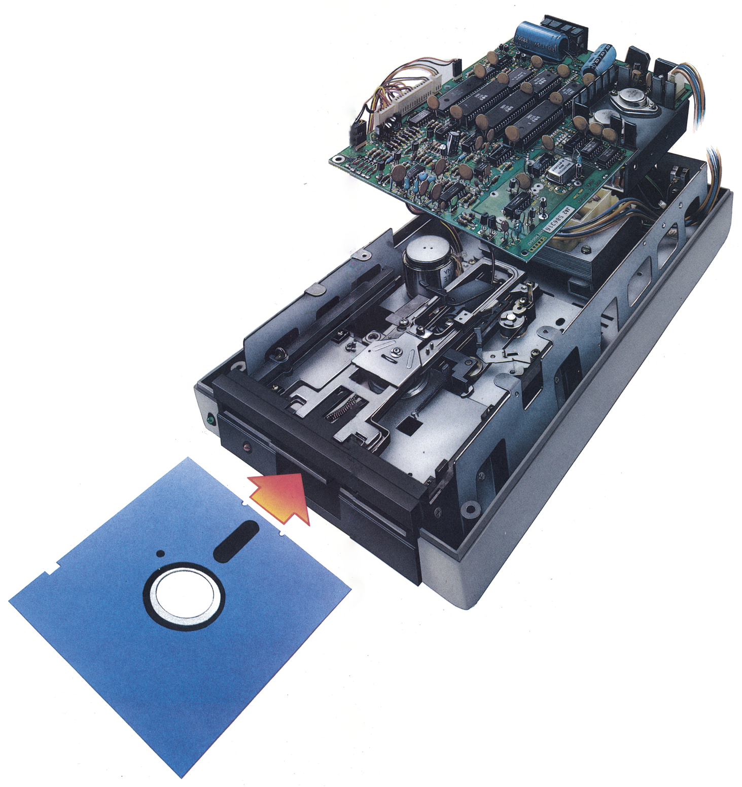
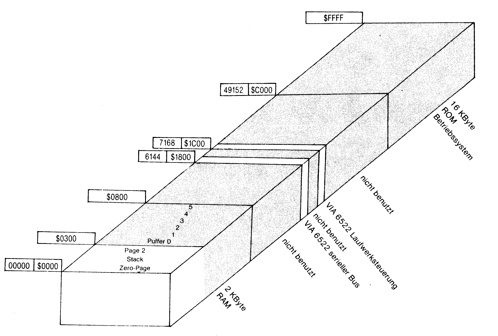
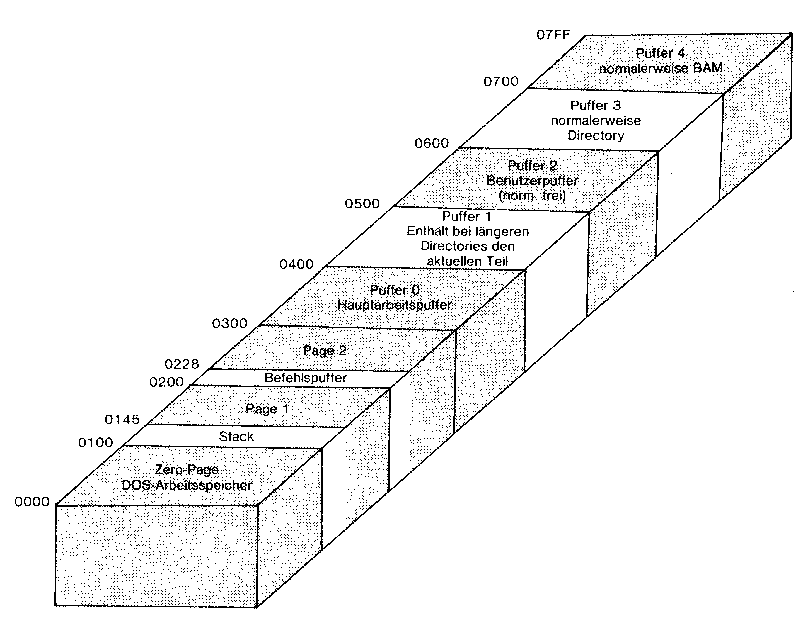
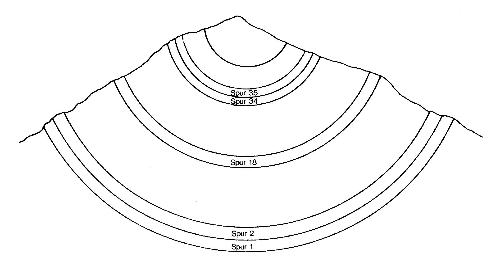
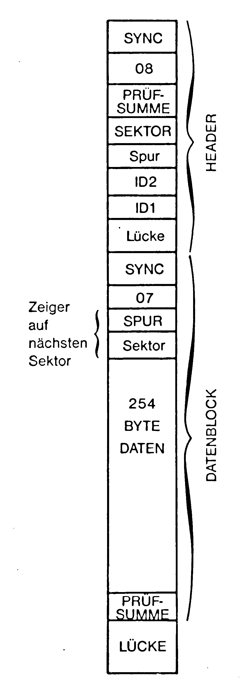
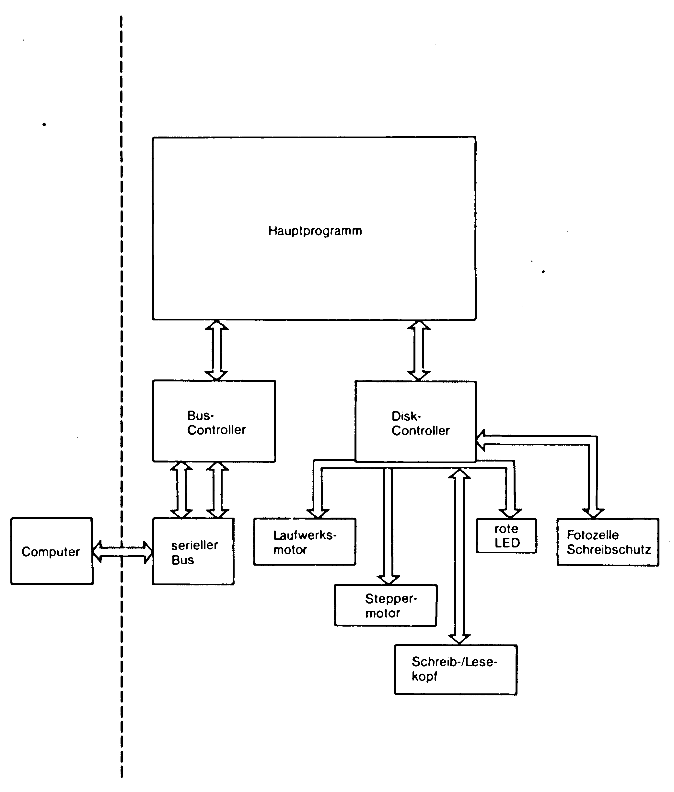
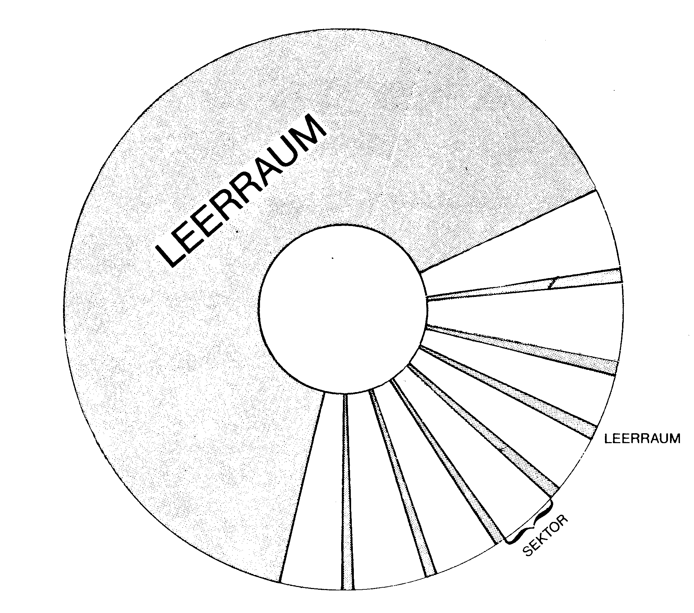
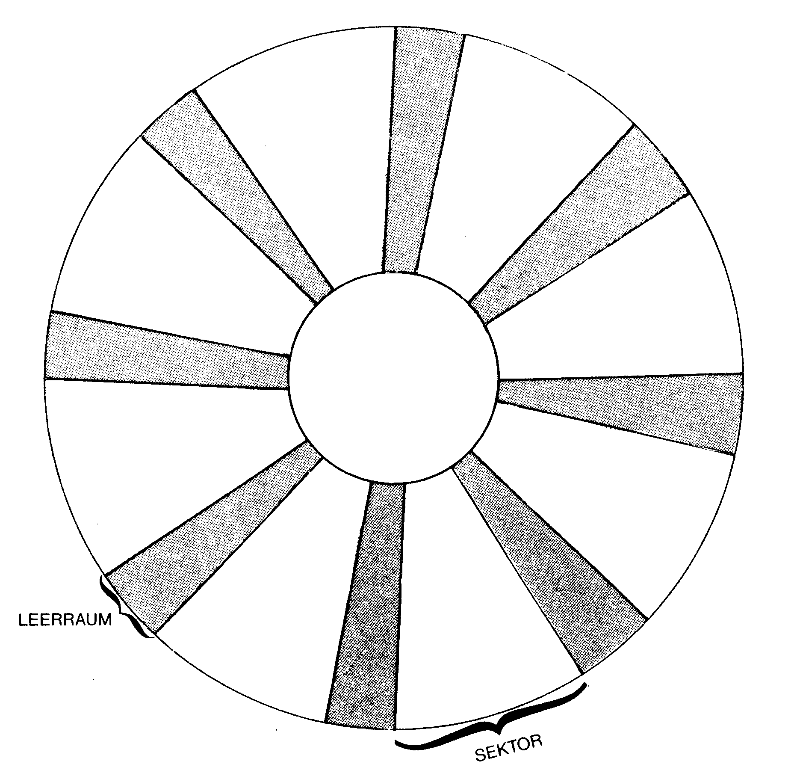
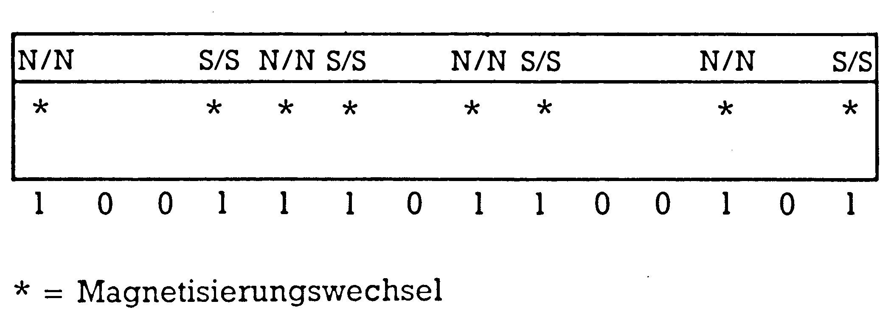

In die Geheimnisse der Floppy eingetaucht
Die Diskettenlaufwerke 1541, 1570 und 1571 sind Renner unter den Massenspeichern. Doch mit der passenden Literatur hapert es. Deshalb beschränken sich die meisten Anwender auf das Speichern und Laden von Programmen. Mit diesem Kurs lernen Sie, Ihr Laufwerk effektiver einzusetzen und es sogar zu manipulieren.

Daß die 1541 (die Angaben gelten auch für die 1570/1571 im 1541-Modus) ein sehr wandelbares Gerät ist, werden die meisten Benutzer wohl wissen oder zumindest erahnen. Man denke ja nur an den »Kleinkrieg« zwischen Softwareherstellern und Softwarepiraten, die sich gegenseitig das Leben schwer machen. Die meisten »Schlachten« liefert man sich hier im Inneren der Floppy-Station, die viel raffiniertere Methoden des Programmschutzes anbietet als der Commodore 64 selbst.
Aber auch Programme wie Hypra-Load beweisen die Flexibilität der Diskettenstation. Doch wie bei so vielen Dingen in der Commodore-Welt sind auch hier die Informationen rar, beziehungsweise in den Handbüchern gar nicht vorhanden. So wollen wir uns mit Ihnen an das Floppy-Laufwerk heran- und vorsichtig hineintasten. Angefangen bei grundlegenden Informationen über den Diskettenaufbau und den Befehlssatz des Laufwerks werden wir Schritt für Schritt in dessen Möglichkeiten zur Programmierung und Manipulation hinabtauchen. Was wird benötigt?
Nun, außer einem C 64 (C 128) und einer 1541/70/71, »nur« Basic-Erfahrungen, grundlegende Kenntnisse in Maschinensprache und ein wenig Geduld.
Bevor wir jedoch mit unserer ersten Tauchfahrt beginnen, tippen Sie bitte das beigefügte Programm EDDI (Listing 1) ein, sofern Sie nicht über einen eigenen Disk-Monitor verfügen. Auf die Bedienung von EDDI wird im einzelnen noch eingegangen.
Sehen wir uns jetzt erst einmal eine Diskette an. Die folgenden Erläuterungen beziehen sich auf eine formatierte Diskette.
Aufbau einer Diskette
Eine Diskette ist in 35 konzentrische Spuren (englisch: Tracks) aufgeteilt. Jede dieser Spuren enthält wiederum eine bestimmte Anzahl von Sektoren, die von außen nach innen abnimmt. Die genauen Zahlenverhältnisse stehen in Tabelle 1.
| Spur 01 bis 17 | 21 Sektoren |
| Spur 18 bis 24 | 19 Sektoren |
| Spur 25 bis 30 | 18 Sektoren |
| Spur 31 bis 35 | 17 Sektoren |
| Spur 36 bis 52 | 21 Sektoren (nur 1571) |
| Spur 53 bis 59 | 19 Sektoren (nur 1571) |
| Spur 60 bis 65 | 18 Sektoren (nur 1571) |
| Spur 66 bis 70 | 17 Sektoren (nur 1571) |
Die Spuren sind, beginnend mit der äußeren Spur, von 1 bis 35 durchnumeriert. Die Sektoren sind auf den Spuren in numerischer Reihenfolge gegen den Uhrzeigersinn angeordnet. Jeder Sektor enthält einen Block, das sind 256 Byte, an Information. Es kann jeder der 683 Blöcke auf der Diskette durch Angabe der jeweiligen Spur- und Sektornummer aufgerufen werden. Allerdings stehen davon dem Benutzer normalerweise nur 664 (1328) Blocks zur Verfügung, da das Betriebssystem der Floppystation die Spur 18 (18 und 53) für sich beschlagnahmt (für die 1571 gilt natürlich jeweils die doppelte Kapazität im C 128-Modus).
Für die nun folgenden Versuche wäre es sinnvoll, eine Diskette neu zu formatieren, mit der wir ein bißchen »spielen« können. Sehen wir uns nun erst einmal das Directory an (LOAD "$",8):
In der ersten Zeile stehen die Drive-Nummer (hier immer 0) und der Name der Diskette, sowie die ID und das Formatkennzeichen (Genaueres später).
Die zweite Zeile enthält, da sich kein File auf der Diskette befindet, die Meldung »664 BLOCKS FREE«.
Da sich diese Informationen auf der schon erwähnten Spur 18 befinden, wollen wir uns diese Spur mit EDDI gleich einmal etwas genauer ansehen. Laden Sie den Editor und legen Sie unsere »Spieldiskette« ein; danach starten Sie mit RUN.
Als Kommando tippen Sie <F3> für »BLOCK LESEN«.
Danach geben Sie, durch Komma getrennt, die Spur und Sektornummer des gewünschten Blocks ein; in unserem Fall »18,0«.
Nach dem Ladevorgang meldet sich EDDI mit Byte 0 der ersten von 16 Seiten, zu je 16 Byte. Drücken Sie jetzt <RETURN>, um die erste Seite anzuzeigen, welche wir nun betrachten wollen.
Es sollte vielleicht erwähnt werden, daß die Zählung von Blöcken und Bytes grundsätzlich bei Null beginnt. Den geladenen Block bezeichnet man als BAM (Block Availability Map), auf deutsch etwa »Blockbelegungsplan«. Dieser Plan gibt an, welche Blöcke auf der Diskette frei und welche schon beschrieben sind. Ferner enthält er den Namen der Diskette, die ID, das Formatkennzeichen und den Beginn des Directory.
Die ersten beiden Byte (0,1) dieses Blocks enthalten Spur und Sektor des ersten Directory-Blocks; normalerweise »18,1« (siehe auch Tabelle 2).
Byte 2 enthält das Formatkennzeichen (hier 65, beziehungsweise »A«). Zur Erklärung: Commodore stellt verschiedene Laufwerke her, zum Beispiel die 1541, 4040, 8050 und 8250. Diese Laufwerke unterscheiden sich fast alle im Aufzeichnungsformat, das heißt Anzahl und Verteilung der Spuren und Sektoren; so hat die CBM 8050 77 Spuren mit bis zu 29 Sektoren, was deren höhere Speicherkapazität zur Folge hat. Solche Disketten können verständlicherweise von der 1541 weder gelesen noch beschrieben werden. Am Formatkennzeichen »A« erkennt die 1541 nun Disketten ihres eigenen Formats; ist dieses nicht identisch, so beschwert sich die Floppy-Station mit einer Fehlermeldung. Eine Ausnahme dieser Regel bildet die Lesekompatibilität, die besagt, daß eine »fremde« Diskette zwar gelesen, aber nicht beschrieben werden kann (zum Beispiel eine Diskette des 4040- auf dem 1541-Laufwerk).
| Byte | Bedeutung |
| 000 | enthält 18 ($12); Spurnummer für Directory |
| 001 | enthält 1 ($01); Startsektor für Directory |
| 002 | enthält 65 ($41); Formatkennzeichen »A« |
| 003 | Flag für doppelseitige Disketten (1 = doppelseitige Disk, keine Bedeutung im 1541-Modus) |
| 004 | Anzahl der freien Blöcke/Sektoren für Spur 1 |
| 005-007 | Bitmuster der Blockbelegung für Spur 1: Bit = 1 bedeutet »Sektor/Block frei« Bit = 0 bedeutet »Sektor/Block belegt« Byte 005 enthält die Belegung für Sektor 0-7 Byte 006 enthält die Belegung für Sektor 8-16 Byte 007 enthält die Belegung für Sektor 17-23 (Sektor 21-23 sind natürlich nie vorhanden) |
| 008-011 | s.o. 004-007 für Spur 2 |
| . . . | |
| 140-143 | s.o. 004-007 für Spur 35 |
| 144-159 | Diskettenname, der bei der Formatierung angegeben wird; aufgefüllt mit Charactercodes 160 ($a0) |
| 160-163 | zweimal 160 ($a0) »SHIFT SPACE« |
| 164 | 160 ($a0) »SHIFT SPACE« |
| 165-166 | $32 und $41 "2A"; Formatangabe der Diskette |
| 167-170 | 160 ($a0) »SHIFT SPACE« |
| 171-179 | $00 bei 1541-Modus; $a0 bei 1570/71-Modus |
| 180-220 | 0 ($00); nicht benutzter Bereich |
| 221-255 | 1541/1570: restlicher Bereich nicht verwendet. |
| bei 1571: | |
| 221-237 | Anzahl der freien Blöcke für Spur 36-52 |
| 238 | Anzahl der freien Blöcke für Spur 53 (immer 0) |
| 239-244 | Anzahl der freien Blöcke für Spur 54-59 |
| 245-250 | Anzahl der freien Blöcke für Spur 60-65 |
| 251-255 | Anzahl der freien Blöcke für Spur 66-70 |
Die 1571 enthält zusätzlich noch ein Verzeichnis in Block 53,0:
| Byte | Bedeutung |
| 000 | enthält 0 ($00) |
| 001-003 | s.o. 005-007 für Spur 36 |
| . . . | |
| 102-104 | s.o. 005-007 für Spur 70 |
| 105-255 | restlicher Bereich nicht verwendet |
Byte 3 steht generell auf Null, da es bei der 1541 keine Funktion erfüllt.
Erste Versuche mit EDDI, dem Disk-Monitor/Editor
Die Byte 4 bis 143 enthalten nun die eigentliche BAM, deren Format ein wenig kompliziert ist: Für jede Spur sind 4 Byte reserviert, wobei das jeweils erste Byte die Anzahl der noch freien Blöcke auf dieser Spur angibt. Die folgenden 3 Byte müssen wir als eine Gesamtheit von 24 Bit betrachten, wobei jedes gesetzte Bit einen freien Block signalisiert; siehe auch Tabelle 3.
| Aufbau eines 4-Byte-Eintrages in der BAM (eine Spur) | |
|---|---|
| BYTE(s) | Bedeutung: |
| 000 | Anzahl der freien Blöcke dieser Spur |
| 001-003 | Belegplan der Spur. Jedes Byte ist zuständig für 8 Sektoren: Byte 1 für 0-7 Bit 7 für Sektor 0 Bit 6 für Sektor 1 und so weiter Byte 2 für 8-15 Byte 3 für 16-23 |
Um auch die folgenden Seiten des Blocks zu betrachten, drücken Sie zum Vorwärtsblättern <F1>; die weitere Bedienung ist analog zur oben beschriebenen. Rückwärtsblättern ist durch Drücken von <F2> möglich.
Fahren Sie nun bis zum Byte 144 vor und sehen Sie sich die Seite an.
Die Byte 144 bis 161 enthalten den Namen der Diskette, der beim Formatieren festgelegt wird. Direkt im Anschluß daran folgen die Byte 162,163, die die ID im ASCII-Code beinhalten, gefolgt von einem »SHIFT SPACE«. An der ID erkennt die Floppystation, ob die Diskette gewechselt wurde; deshalb sollte jede Diskette eine andere ID haben.
Byte 165 und 166 enthalten DOS-Version und Formatkennzeichen, hier normalerweise »2A«, wiederum gefolgt von einem »SHIFT SPACE«.
Die Bytes 171 bis 255 haben normalerweise keine Bedeutung und können unterschiedlich gefüllt sein.
Wie sieht das Inhaltsverzeichnis aus?
Auf unserer Entdeckungsreise durch Spur 18 folgen wir jetzt der Angabe in den ersten beiden Byte und laden den ersten Directory-Block (<F3>; 18,1). Das Format des Blocks ist der Tabelle 4 zu entnehmen. Jeder Directory-Block enthält acht File-Einträge und den Zeiger auf den nächsten Directory-Block (Byte 0 und 1); ist die Track-Nummer des nächsten Blocks 0, so war der gelesene Directory-Block der letzte, und das zweite Byte zeigt die Anzahl der hier benutzten Byte. In unserem Fall stehen hier 0 und 255.
| Aufbau eines Directory-Blocks: | |
|---|---|
| BYTE(s) | Bedeutung |
| 000-001 | Spur und Sektor des nächsten Directory-Blocks |
| 002-031 | Eintrag Nummer 1 |
| 032-033 | unbenutzt |
| 034-063 | Eintrag Nummer 2 |
| 064-066 | unbenutzt |
| 067-225 | Einträge Nummer 3-7 beziehungsweise unbenutzt |
| 226-255 | Eintrag Nummer 8 |
Nun zu Tabelle 5, die das Format eines Directory-Eintrags darlegt: Jeder dieser Einträge besteht aus 30 Byte, wobei das erste den Filetyp (siehe Tabelle 6), die beiden nächsten Spuren und Sektoren des ersten Fileblocks und die 16 folgenden Bytes den Filenamen enthalten. Die folgenden 3 Byte werden nur bei relativen Dateien verwendet; sie werden später im einzelnen noch besprochen.
| Aufbau eines Directory-Eintrags: | |
|---|---|
| BYTE(s) | Bedeutung |
| 000 | Filetyp, siehe gesonderte Tabelle |
| 001-002 | Spur und Sektor des ersten Datenblocks |
| 003-018 | Filename, aufgefüllt mit Charactercode 160 |
| 019-020 | REL-Files: Spur und Sektor des ersten Side-Sektor-Blocks |
| 021 | REL-Files: Datensatzlänge |
| 022-025 | unbenutzt |
| 026-027 | Spur und Sektor beim Überschreiben mit @ (nur Zwischenspeicher) |
| 028-029 | Anzahl der von diesem File belegten Blocks |
| Aufbau des Filetyp-Bytes | |||||
|---|---|---|---|---|---|
| BIT | Bedeutung, in Klammern jeweiliger Inhalt | ||||
| 0 | (0) | (1) | (0) | (1) | (0) |
| 1 | (0)=DEL | (0)=SEQ | (1)=PRG | (1)=USR | (0)=REL |
| 2 | (0) | (0) | (0) | (0) | (1) |
| 3 | unbenutzt | ||||
| 4 | unbenutzt | ||||
| 5 | unbenutzt | ||||
| 6 | (0)=normal; (1) = File kann durch SCRATCH nicht mehr gelöscht werden | ||||
| 7 | (0)= File noch offen (1)= File ordnungsgemäß geschlossen |
||||
Byte 26 und 27 enthalten Track und Sektor des neuen Files, falls das alte mit »@« überschrieben wurde. Die Byte 28, 29 schließlich geben die Anzahl der belegten Blöcke dieses Files an.
Die einzelnen Datei-Typen
Diese bis jetzt beschriebenen Angaben werden vom Betriebssystem der Floppy, also vom DOS (englisch: Disk Operating System), verwaltet.
Beschäftigen wir uns nun mit den restlichen Blöcken auf der Diskette, die dem Anwender zur freien Verfügung stehen, denn dort werden die einzelnen Files gespeichert, deren Aufbau uns jetzt interessiert.
DEL-Files:
Diese Fileanzeige existiert normalerweise nicht im Directory; wird ein File gelöscht, so wird dieses nicht mehr angezeigt; das Byte des Filetyps steht dann auf 0. Durch Setzen des Filetyps auf 128 (hex. $80) kann eine DEL-Anzeige jedoch erzwungen werden.
SEQ-Files:
Dieser Filetyp dient zur Speicherung von Daten auf Diskette (im Gegensatz zur Programmspeicherung). Der Aufbau dieses Filetyps ist relativ einfach: Die ersten beiden Bytes eines Datenblocks zeigen jeweils auf den nächsten Block im File; so erfolgt eine beliebig lange Blockverkettung auf der Diskette. Da aber auch das schönste File einmal zu Ende geht, muß der letzte Block gekennzeichnet sein. Dies erfolgt, wie schon beim Directory, durch eine 0 als Spurnummer. Die Sektornummer bezeichnet jetzt die Anzahl der belegten Datenbytes dieses Blocks. Diese Art der Verkettung von Blöcken wird bei allen Filetypen vorgenommen! Die restlichen 254 Byte jedes Blocks enthalten die Daten.
USR-Files:
USR-Files stimmen im Aufbau exakt mit den SEQ-Files überein, sie haben jedoch noch Zusatzfunktionen im DOS, auf die später eingegangen werden soll.
PRG-Files:
PRG-Files stellen den häufigsten Filetyp dar. Sie dienen der Speicherung von Programmen auf der Diskette und haben nahezu denselben Aufbau wie SEQ-Files. Der einzige Unterschied besteht in den Byte 2 und 3 des ersten Blocks, welche die Startadresse des Programms im Computer enthalten. Ist diese Adresse gleich der Adresse des Basic-Anfangs, also 2049 ($0801), so können die Programme mit »LOAD"Name",8« geladen werden; dieser Modus ignoriert die Anfangsadresse auf Diskette und lädt die Programme generell an den Basic-Anfang (sogenanntes relatives Laden). Sollen Programme jedoch an anderen Stellen im Speicher stehen, zum Beispiel Maschinenprogramme, so muß diese angegebene Adresse als Startadresse benutzt werden; man lädt hier absolut mit »LOAD"Name",8,1«.
REL-Files:
Dieser Filetyp ist im Aufbau ungleich komplizierter als die eben besprochenen; es soll daher zuerst kurz auf die Arbeitsweise von REL-Files eingegangen werden. Sequentielle Files haben den Nachteil, daß sie praktisch nur aus einem Datensatz bestehen. Sucht man nun, zum Beispiel in einer Kartei, eine bestimmte Hausnummer oder einen bestimmten Namen, so muß der gesamte Datensatz durchgelesen werden, um die entsprechende Stelle zu finden. In einer relativen Datei geht man deshalb einen anderen Weg, um jede Stelle schnell auffinden zu können.
Es existiert eine beliebige Anzahl (zum Beispiel 100) von Datensätzen, wobei alle Datensätze die gleiche Länge haben müssen (maximal 254 Zeichen).
Das DOS legt jetzt einen sogenannten Side-Sektor an, der aus bis zu sechs Blöcken bestehen kann. Diese Blöcke enthalten nun die Zeiger auf sämtliche Datenblöcke, in denen die Datensätze gespeichert sind (1 Datensatz hat maximal 1 Block Länge). Auch hier sind die Datenblöcke wieder durch Zeiger in den Byte 0 und 1 verkettet. Den Aufbau eines Side-Sektor-Blocks zeigt Tabelle 7. Zum besseren Verständnis hier ein kleines Beispiel:
| Aufbau eines Side-Sektor-Blocks: | |
|---|---|
| BYTE(s) | Bedeutung |
| 000-001 | Spur und Sektor des nächsten Side-Sektor-Blocks |
| 002 | Nummer des Side-Sektor-Blocks |
| 003 | Datensatzlänge |
| 004-005 | Spur und Sektor des Side–Sektor–Blocks 1 |
| 006-007 | Spur und Sektor des Side–Sektor–Blocks 2 |
| 008-015 | Spur und Sektor der Side–Sektor–Blöcke 3-6 |
| 016-017 | Spur und Sektor des ersten Datenblocks, für den der Side-Sektor-Block zuständig ist (Datenblock 0) Spur und Sektor des zweiten Datenblocks (Nummer 1) |
| 018-255 | Spur und Sektor der Datenblocks Nummer 2 bis Nummer 119 |
Wir haben eine relative Datei mit 250 Datensätzen à 127 Zeichen. Diese Datei benötigt also 125 Datenblöcke und zwei Side-Sektor-Blöcke. Im Directory-Eintrag finden wir jetzt die schon erwähnten zusätzlichen Byte-Belegungen: Byte 19 und 20 jedes Eintrags enthalten jetzt Spur und Sektor des ersten Side-Sektor-Blocks; Byte 21 gibt die Datensatzlänge (Recordlänge) an.
Wir wollen jetzt auf den 248. Datensatz zugreifen; das DOS arbeitet nun folgendermaßen: Ein Datensatz enthält 127 Byte, das heißt, es passen zwei Datensätze in einen Block; dadurch errechnet sich der Block, auf den jetzt zugegriffen wird, aus (248-1)/2=123,5. (Minus 1, da immer von 0 an gezählt wird.) Da ein Side-Sektor-Block nur 120 Einträge aufnehmen kann, ist der Zeiger auf den Datenblock im Side-Sektor-Block Nummer 2 zu finden. Dieser wird jetzt anhand des Verzeichnisses in Block 1 gelesen und dann auf Zeiger Nummer 3 (Byte 22,23) zugegriffen. Wir kennen also jetzt Spur und Sektor des Blocks, in dem unser Datensatz steht; die Position des ersten Daten-Byte berechnet sich jetzt aus dem Nachkommaanteil der obigen Division (0.5x254=127). Der Datensatz beginnt also beim 127+2=129. Byte.
Der Aufbau von relativen Dateien ist also, wie schon erwähnt, ziemlich kompliziert; diese Art der Datenspeicherung hat aber einige Vorteile gegenüber der »normalen« mit SEQ-Files.
Bedienungshinweise für EDDI, den Disk-Monitor/Editor
Da unserem U-Boot auf dieser schwierigen Fahrt der Sauerstoff ausgegangen ist, wollen wir uns nun erst einmal erholen. Hier noch ein paar Anregungen zur Arbeit mit EDDI: EDDI kann nicht nur Blöcke lesen und anzeigen; Sie können auch Bytes verändern und diesen Block danach wieder abspeichern.
Dazu laden Sie den zu verändernden Block und fahren auf die Seite, die Sie interessiert; hier tippen Sie als Kommando <F5>, und der Editormodus startet. Sie können jetzt Bytes dezimal abändern, indem Sie den jeweils neuen Wert eingeben und <RETURN> drücken. Wollen Sie aus dem Eingabemodus aussteigen, so tippen Sie entweder <RETURN> und können weiterblättern, ohne den Editor zu verlassen, oder Sie tippen <↑> <RETURN>, um in den Kommandomodus zu kommen. Nach einigem Probieren wird Ihnen EDDI sehr schnell vertraut werden; wir gehen auch in den folgenden Abschnitten noch darauf ein.
Wichtig:
Beim Wechseln einer Diskette muß die Funktionstaste <F6> getippt und nach dem Austausch eine Taste gedrückt werden, sonst reagiert das Laufwerk mit einer Fehlermeldung. Diese können übrigens mit <@> abgerufen werden. Das Zurückschreiben eines Blocks auf Diskette erfolgt mit <F4>, wobei Spur und Sektornummer angegeben werden müssen. Hier noch ein paar Vorschläge zum Ausprobieren: Ändern Sie doch einmal auf Ihrer Versuchsdiskette (!) das Formatkennzeichen (Spur 18, Sektor 0, Byte 2 auf 66 statt jetzt 65) und speichern den Block an die gleiche Stelle auf die Diskette zurück. Versuchen Sie nun einmal, ein kleines Programm auf dieser Diskette zu speichern. (Die genauen Vorgänge in der Floppy-Station werden später erläutert.) Oder ändern Sie einmal die Bytes im Directory, die den Filetyp angeben, entspechend Tabelle 6 und laden Sie es danach. Experimentieren Sie ruhig ein wenig mit der Floppy-Station. Das wird Ihnen das Verständnis im weiteren Verlauf des Kurses stark erleichtern.
Floppy kontra Datasette
Sicherlich machte sich jeder, der ein schnelleres Peripheriegerät als die Datasette haben wollte, schon seine Gedanken über den Preis der 1541/70/71: »Die kostet ja mehr als der Computer!«. In der Tat ist die 1541-Floppystation von dieser Seite her betrachtet nicht gerade günstig, wer sich jedoch schon intensiver mit ihr beschäftigt hat, wird eine Eigenart festgestellt haben, die sie mit allen anderen Commodore-Laufwerken teilt: Sie ist »intelligent«. Diese Laufwewrke besitzen ein eigenes Betriebssystem (DOS) und eigene Mikroprozessoren. Sie arbeiten völlig unabhängig vom Computer und dessen Speicher. Der Vorteil liegt auf der Hand: Das 1541-Laufwerk beansprucht weder Speicherplatz noch Rechenzeit des Computers, außer beim direkten Datenaustausch. Als Beispiel betrachte man den Befehl »N« (Formatieren). Während der Formatierung steht der Computer zur (fast) freien Verfügung, da dieser Vorgang nur laufwerksintern abläuft und sich der C 64 mit READY meldet, während die 1541 noch arbeitet.
Wir wollen uns jedoch nur den Direktzugriffsbefehlen und den Speicherbefehlen widmen; auch übergehen wir die im Commodore-Handbuch nicht erwähnte relative Datenspeicherung, über die in anderen Ausgaben schon ausführlich gesprochen wurde. Uns sollen nur die Befehle beschäftigen, die uns zur willkürlichen Manipulation von Floppystation und Disketten nützen.
Zur Beruhigung: Ein Beschädigen der 1541 durch direkte Eingriffe in das DOS ist nicht zu befürchten, auch wenn es passieren kann, daß sich das Laufwerk nur noch durch Aus-/Einschalten wieder in den Normalzustand versetzen läßt. Haben Sie übrigens einmal, wie empfohlen, das Formatkennzeichen einer Diskette verändert? Sie werden sicherlich bemerkt haben, daß sich danach nichts mehr auf Ihre Diskette schreiben läßt. Mit diesem Trick, der die gleichen Folgen wie das Anbringen einer Schreibschutzplakette an der Diskette hat, können Sie sich also ganz einfach Ihre Diskette gegen unbeabsichtigtes Löschen sichern. ACHTUNG: Diese Methode funktioniert natürlich nicht, wenn neu formatiert werden soll; dagegen hilft nur das Anbringen einer Schreibschutzplakette!
Die Floppystation verfügt, außer den schon bekannten Befehlen zur Diskettenorganisation, über eine ganze Anzahl weiterer Befehle, mit denen sich ungeahnte Möglichkeiten ergeben, zum Beispiel Herstellen eines eigenen Diskettenformats, Leseschutz von Disketten, Programmschutz, Modifikation der Lade- und Saveroutinen und, und, und. Dafür ist es allerdings nötig, daß wir diese Befehle Schritt für Schritt kennen lernen, bevor wir auf die Tricks der Profis, die Manipulationen des DOS und den gezielten Eingriff in den Programmablauf der Floppystation zu sprechen kommen. Dafür ist allerdings das Beherrschen des C 64 und der Maschinensprache unerläßlich. So lohnt es sich unter Umständen, nachdem man aus dem Basic nichts mehr herausholen kann, den Einstieg in die Assemblerprogrammierung zu wagen. Sehr gute Literatur dafür ist vorhanden. Aber vorerst wollen wir uns noch auf das Basic beschränken, um Sie mit dem Befehlssatz der Floppystation vertraut zu machen.
Befehle an die 1541/70/71
Wie schon erwähnt, handelt es sich bei der 1541 um einen vollständigen Computer, der ebenso wie Ihr C 64 RAM und ein Betriebssystem (DOS) im ROM besitzt.
Die genaue Aufteilung ist in Bild 1 zu sehen. Jetzt soll uns nur der RAM-Bereich interessieren (Bild 2). Nicht nur auf der Diskette, sondern auch im RAM werden Speicherbereiche in Abschnitte zu jeweils 256 Byte aufgeteilt. Sie heißen dann nicht mehr Blocks, sondern Pages (Seiten). Das RAM der 1541/70/71 umfaßt nun genau 8 Pages, durchnumeriert von 0 bis 7, insgesamt also 2 KByte. Die Page Nummer 0 (auch Zero-Page genannt) wird hier, wie auch im C 64, vom Betriebssystem als Arbeitsspeicher benutzt und steht uns deshalb nicht zur freien Verfügung. Ähnlich verhält es sich mit den Pages 1 und 2. Die Pages 3 bis 7 stellen sogenannte Pufferspeicher dar; hier werden alle Daten, die von der Diskette gelesen beziehungsweise auf sie geschrieben werden, zwischengespeichert, da nur blockweise gelesen oder geschrieben werden kann.


Soll zum Beispiel nur ein einziges Byte auf der Diskette geändert werden, so wird erst der gesamte Block in einen der 5 Pufferspeicher gelesen, dort abgeändert und schließlich komplett wieder zurückgeschrieben. Aus diesen Gründen ist es also notwendig, daß wir uns vor einem Direktzugriff einen der Puffer reservieren, in dem dann gearbeitet wird.
Mit Hilfe des »OPEN«-Befehls eröffnen wir einen Direktzugriffskanal. Die Syntax lautet wie folgt:
OPEN fn, gn, kn, "#"
Hierbei bedeuten:
| fn | – | Filenummer (1-127) |
| gn | – | Gerätenummer (normalerweise 8) |
| kn | – | Kanalnummer in der Floppy (2-14) |
Diese Abkürzungen werden wir im folgenden immer verwenden! Ein Beispiel:
OPEN 1, 8, 2, "#"
Diese Anweisung öffnet im Computer ein File mit der Nummer 1, adressiert als Gerät die Floppystation (Nummer 8) und reserviert in der 1541 einen Kanal (Nummer 2), dem ein Puffer zugeordnet wird. Mit den laufwerksinternen Kanälen verhält es sich wie folgt: Es stehen insgesamt 16 Kanäle zur Verfügung. Hierbei sind Kanal 0 und 1 für LOAD und SAVE reserviert, Kanal 15 ist der Kommandokanal, den Sie bisher immer benutzt haben, um Befehle (zum Beispiel Formatieren) an das Laufwerk zu senden und die Fehlermeldungen des Laufwerks zu empfangen.
Für unsere Zwecke stehen also noch die Kanäle 2 bis 14 zur Verfügung. In unserem Fall reserviert die Floppystation den nächsten freien Puffer. Will man jedoch einen bestimmten Puffer reservieren, etwa um dort ein Maschinenprogramm abzulegen, so ist es notwendig, der 1541 mitzuteilen, welcher Puffer gewünscht wird:
OPEN 1, 8, 2, "#1"
Es ist hier allerdings zu beachten, daß der gewählte Puffer nicht schon belegt ist; in diesem Fall gibt die 1541 eine Fehlermeldung aus. Wollen Sie an dieser Stelle mehr über das Auslesen der Fehlermeldungen und deren Bedeutung wissen, können wir Sie hier beruhigt auf das Commodore-Handbuch verweisen.
Im allgemeinen sind Puffer 4 für die BAM und Puffer 3 für das Directory reserviert. Haben Sie die Wahl des Puffers der Floppystation überlassen, so erfahren Sie die gewählte Nummer durch Auslesen des soeben geöffneten Direktzugriffskanals:
10 OPEN 1, 8, 2, "#"
20 GET#1, D$
30 D=ASC(D$+CHR$(0))
40 REM PUFFERNUMMER IN D
Die BLOCK-Befehle
a) Der BLOCK-READ-Befehl (B-R):
Mit dem BLOCK-READ-Befehl liest man jeden beliebigen Block von Diskette in einen vorher reservierten Puffer. Die Syntax lautet:
PRINT#fn, "B-R"; kn; dn; t; s
| dn | – | Drivenummer (immer 0) |
| t | – | Track-Nummer |
| s | – | Sektornummer |
Beispiel:
PRINT#15, "B-R 2 0 18 0"
Diese Befehlsfolge liest den Block 18,0 von der Diskette in den oben reservierten Puffer. Wie man sieht, können anstelle der CHR$-Codes feste Zahlenwerte in den Befehlsstring mit übernommen werden.
Das Ganze hat bloß einen kleinen Schönheitsfehler. Mit dem B-R-Befehl läßt sich das erste Byte eines Blocks nicht lesen. Deshalb benutzt man normalerweise anstatt des B-R-Befehls den U1-Befehl. Dieser hat exakt die gleiche Syntax und kann in jedem Fall benutzt werden:
PRINT#15, "U1 2 0 18 0"
Auf diese User-Befehle kommen wir später zurück. Mit einer GET #-Schleife lassen sich nun die einzelnen Bytes in den Computer einlesen.
b) Der BLOCK-WRITE-Befehl (B-W):
Hiermit lassen sich die Daten aus dem reservierten Puffer wieder auf die Diskette schreiben. Syntax:
PRINT#fn, "B-W"; kn; dn; t; s
Beispiel:
PRINT#15, "B-W 2 0 18 0"
Natürlich gibt es analog zum B-W- einen USER-Befehl: U2.
Beispiel:
PRINT#15, "U2 2 0 18 0".
c) Der BUFFER-POINTER-Befehl (B-P):
Für jeden Puffer gibt es einen Zeiger, den Buffer-Pointer. Dieser zeigt auf das aktuelle Byte im Puffer und wird bei jedem Datenzugriff um Eins erhöht, damit man alle 256 Byte eines Blocks der Reihe nach lesen kann.
Dieser Pointer wird mit dem B-P-Befehl gezielt auf bestimmte Bytes positioniert, wenn man nur einzelne Werte und nicht den gesamten Block lesen will.
Syntax:
PRINT#fn, "B-P"; kn; position
Beispiel:
Wir möchten in die Variable A den Wert des 123. Bytes von Block 1;16 einlesen:
10 OPEN 15, 8, 15
20 OPEN 1, 8, 2,"#"
30 PRINT#15, "U1 2 0 1 16"
40 PRINT#15, "B-P 2 122"
50 GET#1, A$
60 A=ASC(A$+CHR$(0))
Als weiteres Beispiel dient Listing 1.
d) Der BLOCK-ALLOCATE-Befehl (B-A):
Wenn Sie im Direktzugriffsverfahren eine Diskette beschreiben, muß in der BAM danach auch verzeichnet werden, daß die entsprechenden Blocks mit Daten gefüllt sind und nicht mehr überschrieben werden dürfen. Dazu dient der B-A-Befehl, der jeden beliebigen Block in der BAM als belegt kennzeichnet. Die Syntax lautet:
PRINT#fn, "B-A"; dn; t; s
Beispiel:
PRINT#15, "B-A 0 1 16"
kennzeichnet Block 1;16 als belegt; war dieser Block schon belegt, meldet sich die Floppystation mit der Fehlermeldung »65, NO BLOCK, XX, YY«; wobei XX und YY die Track- und Sektornummer des nächsten freien Blocks angeben.
e) Der BLOCK-FREE-Befehl (B-F):
Dieser ist das genaue Gegenstück zum B-A-Befehl; er deklariert einmal belegte Blöcke wieder als frei für einen weiteren Zugriff. Seine Syntax ist identisch mit der des B-A-Befehls.
f) Der BLOCK-EXECUTE-Befehl (B-E):
Dieser Befehl nimmt eine Sonderstellung ein. Er gleicht im Prinzip dem B-R-Befehl; nur mit dem zusätzlichen Effekt, daß der eingelesene Block im Puffer als Maschinenprogramm gestartet wird.
Zur Vertiefung der Block-Befehle sei noch auf die Listings 2 bis 7 hingewiesen, welche die eben besprochenen Anwendungen noch an praktischen Beispielen verdeutlichen.
Die MEMORY-Befehle
a) Der MEMORY-READ-Befehl (M-R):
Dieser Befehl entspricht haargenau dem PEEK-Befehl in Basic. Mit ihm können Sie jede beliebige Speicherstelle der Floppystation auslesen.
Syntax:
PRINT#fn, "M-R"; CHR$(adl); CHR$(adh); CHR$(n)
| adl | = Low-Byte |
| adh | = High-Byte |
| n | = Anzahl (0 bis 255) |
Abgeholt werden die gelesenen Daten ebenfalls über den Kommandokanal mit GET#.
Beispiel: Lesen der beiden ID-Zeichen im ASCII-Format der zuletzt initialisierten Diskette:
10 OPEN 15, 8, 15
20 PRINT#15, "M-R" CHR$(18) CHR$(0) CHR$(2)
30 GET#15, A$, B$
40 PRINT A$; B$
Diese Routine liest die Zero-Page-Adressen 18 und 19, in denen die entsprechenden Werte gespeichert sind.
b) Der MEMORY-WRITE-Befehl (M-W):
Dieses Kommando kann als POKE-Befehl in den Floppyspeicher angesehen werden.
Die Syntax ist hier wie folgt:
PRINT#fn, "M-W"; CHR$(adl) CHR$(adh) CHR$(n) CHR$(data1) CHR$(data2)...
c) Der MEMORY-EXECUTE-Befehl (M-E):
Auch dieser Befehl ist äquivalent zu einem Basic-Befehl, dem SYS-Befehl. Mit ihm kann man also ein Maschinenprogramm an einer beliebigen Stelle im Floppyspeicher ausführen.
Syntax:
PRINT#fn, "M-E" CHR$(adl) CHR$ (adh).
Siehe auch Listing 8.
Die User-Befehle
Die User-Befehle stellen eine Erweiterung des Befehlssatzes dar, der fast ausschließlich der Bequemlichkeit dient. U1 und U2 wurden schon besprochen, sie ersetzen B-R und B-W.
Die Befehle U3 bis U8 dienen zum Starten eines Maschinenprogramms im Floppyspeicher, dessen Anfangsadressen in einer Tabelle abgelegt sind, so entsprechen:
U3 einem Start bei $0500
U4 einem Start bei $0503
. . .
U8 einem Start bei $050F.
U4 ersetzt also beispielsweise den Befehlsstring: M-E CHR$(3)CHR$(5).
U9 zeigt auf den NMI-Vektor der 1541, welcher allerdings eine Sonderfunktion hat: Mit U9+ wird die Floppystation auf C 64- und mit U9- auf VC 20-Betrieb umgeschaltet.
U: stellt einen Reset dar, ähnlich dem SYS 64738 beim C 64.
Mit den Kenntnissen über den Befehlssatz der 1541 dürfte es Ihnen nun keine Schwierigkeiten mehr bereiten, sich das Programm EDDI einmal zu Gemüte zu führen. Das einzig Besondere daran sind die Routinen zum Lesen und Schreiben eines Blocks, die aus Geschwindigkeitsgründen in Maschinensprache geschrieben sind. Ein großer Teil der in diesen Folgen erwähnten Informationen ist auch im Commodore-Handbuch enthalten, nur sind dort oft Fehler vorhanden.
1541/70/71 und Assembler
Wenn wir im folgenden von Routinen sprechen, die im Betriebssystem stehen, so werden wir die in Tabelle 8 dargestellten Kürzel verwenden, die Sie übrigens auch in Editorprogrammen gut benutzen können.
Auflistung aller verwendeten ROM-Routinen |
|||
|---|---|---|---|
| Kürzel | Adresse | SECTLK | $FF96 |
| SECLST | $FF93 | ||
| FILPAR | $FFBA | IECOUT | $FFA8 |
| FILNAM | $FFBD | IECIN | $FFA5 |
| OPEN | $FFC0 | FILTAB | $F30F |
| CLOSE | $FFC3 | FILSET | $F31F |
| LISTEN | $FFB1 | LOAD | $FFD5 |
| UNLIST | $FFAE | SAVE | $FFD8 |
| TALK | $FFB4 | BASOUT | $FFD2 |
| UNTALK | $FFAB | CLALL | $FFE7 |
FILPAR und FILNAM
Bei OPEN, LOAD und ähnlichen Befehlen müssen Sie entsprechenden Routinen mitteilen, welches File Sie wo öffnen wollen. Um Ihnen eine »Herumwurstelei« in der Zero-Page zu ersparen, wo Sie die einzelnen Angaben von Hand setzen müßten, hat das Betriebssystem zwei entsprechende Routinen implementiert. FILPAR setzt für Sie die einzelnen Fileparameter. Diese müssen der Routine in den Prozessorregistern übergeben werden:
— Filenummer (Akku)
— Geräteadresse (X-Register)
— Sekundäradresse (Y-Register)
Ein Beispiel:
Sie wollen für ein File mit der Nummer 1, der Geräteadresse 8 und der Sekundäradresse 15 (Kommandokanal) die entsprechenden Fileparameter setzen:
LDA #$01 ; Filenummer 1
LDX #$08 ; Geräteadresse 8
LDY #$6F ; Sekundäradresse + $60
JSR #FILPAR ; Fileparameter setzen
Wie Sie sehen, muß zu der betreffenden Sekundäradresse ein Wert von $60 addiert werden.
Aber in vielen Fällen müssen Sie ja auch einen Filenamen angeben. Dazu dient die FILNAM-Routine. Hier erfolgt die Parameterübergabe:
— Länge des Filenamens (Akku)
— Adresse LO des Namens (X-Register)
— Adresse HI des Namens (Y-Register)
Und wieder ein Beispiel. Um das Directory-File mit dem Namen »$« anzusprechen, geben Sie bitte folgende Befehle ein:
LDA #$24 ; Code für '$' in Akku
STA $FF ; und speichern
LDA #$01 ; Länge des Filenamens
LDX #$FF ; Adresse LO
LDY #$00 ; Adresse HI
JSR FILNAM ; übergeben
Sie müssen also wissen, wo der Filename im Speicher steht und wie lang er ist. Dies ist aber im allgemeinen kein Problem. Auf die gleiche Weise können Sie der Floppystation über den Kommandokanal auch Befehle senden, wie Sie in der letzten Folge vorgestellt wurden. Das entspräche der Basic-Sequenz:
OPEN x, 8, 15, "befehl"
Natürlich können Sie auch alle Parameter von Hand setzen, beziehungsweise noch einmal lesen. Wo sich die einzelnen Parameter in der Zero-Page nach Ausführung dieser und der anderen Routinen befinden, ist in Tabelle 9 angegeben.
Wichtige Zero-Page-Adressen |
|
|---|---|
| Adresse | Bedeutung |
| $90 | Status-Flag |
| $93 | Flag für LOAD/VERIFY |
| $98 | Anzahl der offenen Files |
| $99 | Eingabegerät für BASIN |
| $9A | Ausgabegerät für BASOUT |
| $B7 | Länge Filename |
| $B8 | aktive Filenummer |
| $B9 | Sekundäradresse |
| $BA | Geräteadresse |
| $BB/BC | Zeiger auf Filenamen |
OPEN und CLOSE
Nachdem wir alle Fileparameter und den Filenamen übergeben haben, können wir die OPEN-Routine mit JSR OPEN aufrufen. Schon ist das entsprechende File geöffnet. Zu beachten wäre folgendes: Es können im Computer niemals mehr als 10 Files gleichzeitig geöffnet sein!
Die CLOSE-Routine arbeitet analog zu OPEN, mit der Ausnahme, daß nur die Filenummer übergeben werden muß. Geräteadresse und Sekundäradresse sucht sich der C 64 aus einer Tabelle heraus, auf die wir später noch zu sprechen kommen:
LDA #$01 ; Filenummer
JSR CLOSE in Akku
Der Filename wird beim Schließen überhaupt nicht mehr benötigt.
LISTEN und UNLISTEN, TALK und UNTALK
Nach dem Öffnen eines Files kann die Datenübertragung noch nicht beginnen. Sie müssen dem entsprechenden Gerät zuerst mitteilen, ob es senden oder empfangen soll.
Bestes Beispiel ist wieder der Kommandokanal. Über diesen kann das Floppy-Laufwerk sowohl Befehle empfangen, als auch Fehlermeldungen senden.
Um ein Gerät zum Empfangen zu veranlassen, verwenden wir die Routine LISTEN. Das hat nichts mit dem Basic-Befehl LIST zu tun, sondern kommt vom englischen Wort für »Hören«. Beim Aufruf von LISTEN ist das angesprochene Gerät auf Empfang und der Computer auf Senden eingestellt.
Wichtig ist, daß der Akku beim Aufruf die Geräteadresse enthält. Dies gilt für alle vier hier beschriebenen Routinen. Wenn Sie mit dem Senden der Daten fertig sind, sollten Sie ein UNLISTEN zum entsprechenden Gerät schicken, um dieses wieder freizugeben. Dies geschieht mit Hilfe der UNLIST-Routine. Analog verhält es sich mit den Routinen TALK und UNTALK. Sie veranlassen das angesprochene Gerät, Daten zu senden, beziehungsweise mit dem Senden aufzuhören und wieder in den Wartezustand zurückzukehren.
SECTLK und SECLST
Die beiden Routinen SECTLK und SECLST sind ebenfalls sehr wichtig für die Datenübertragung. Denn obwohl wir beim OPEN-Befehl eine Sekundäradresse angeben, muß diese bei jeder weiteren Übertragung nochmals an das aktuelle Gerät gesendet werden.
Dies hat zwei Gründe: Einerseits können Sie ja mehrere Floppy-Kanäle gleichzeitig geöffnet halten. Damit die Floppystation nun weiß, für welchen Kanal der nächste Schwung von Daten bestimmt ist, beziehungsweise welcher Kanal senden soll, muß nach dem Aufruf von TALK SECTLK, beziehungsweise nach dem Aufruf von LISTEN SECLST durchgeführt werden. Außerdem merkt sich der Computer zwar die angegebene Sekundäradresse, sendet sie aber nicht.
Dies hat praktische Gründe, wie wir noch bei den LOAD/SAVE-Routinen sehen werden. SECTLK und SECLST benötigen die jeweilige Sekundäradresse +$60 im Akku. Diese kann, wie in unseren Beispielen, direkt geladen oder aber auch der entsprechenden Zero-Page-Adresse entnommen werden.
IECOUT und IECIN
Nachdem wir nun endlich alle Vorbereitungen getroffen haben, können wir munter Bytes von der Floppystation zum Computer und umgekehrt übertragen. Dies ist mit den ROM-Routinen denkbar einfach. IECOUT überträgt das im Akku befindliche Byte an das aktuelle Gerät; IECIN empfängt eines und legt es im Akku ab.
Bei aller Sorgfalt – Fehler können immer auftreten, so auch beim Busbetrieb. Um einen in einer Busroutine aufgetretenen Fehler zu signalisieren, verwendet das Betriebssystem das Carry-Flag. Generell gilt: Ist das Carry-Flag gesetzt, so ist etwas nicht in Ordnung, und wir sollten das Status-Byte überprüfen. Dieses Status-Byte steht in der Speicherstelle $90. Immer wenn es ungleich Null ist, liegt irgendein Sonderfall vor. Jedes Bit des Status-Bytes hat eine andere Funktion; Tabelle 10 zeigt diese Belegung. Ist zum Beispiel das Bit 7 gesetzt, so ist das angesprochene Gerät entweder nicht vorhanden oder abgeschaltet. In Basic bekämen wir in einem solchen Fall die Meldung »DEVICE NOT PRESENT ERROR«. Interessant ist für uns noch das Bit 6. Ist es gesetzt, so bedeutet das, daß das letzte Byte der angeforderten Informationen übertragen wurde. Dies können wir uns auch in Basic zunutze machen, um beispielsweise die Fehlermeldung der Floppystation auszulesen:
Das Status-Flag |
|
|---|---|
| Bit | Bedeutung wenn gesetzt |
| 1 | Fehler (Zeitüberschreitung) bei IEC-Eingabe |
| 2 | Fehler (Zeitüberschreitung) bei IEC-Ausgabe |
| 3-5 | nur für Kassettenbetrieb |
| 6 | Übertragung ist beendet |
| 7 | Gerät meldet sich nicht |
10 OPEN 1, 8, 15
20 GET#1, A$: PRINTA$;: IF ST<>64 THEN 20
30 CLOSE 1
Wie Sie an diesem Beispiel sehen, ist der Inhalt der Speicherstelle $90 in der Variablen ST enthalten. Vor jeder neuen Datenübertragung sollten Sie darauf achten, daß das Status-Byte gelöscht wird, da sonst irrtümlich Fehler festgestellt werden könnten. Zur Verdeutlichung des bisher Gesagten dienen die Listings 9 und 10, die jedoch nur Anhaltspunkte geben sollen. Sie sind weder perfekt noch eintippfertig und sollten auf den jeweiligen Bedarf abgestimmt werden.
Bearbeiten mehrerer Files
Sie werden festgestellt haben, daß wir bisher immer nur mit einem einzigen File gearbeitet haben. Was aber, wenn Sie gleichzeitig zwei Files offenhalten müssen, zum Beispiel, um einen Block von Diskette zu lesen. Sie erinnern sich ja, daß wir dazu sowohl den Kommandokanal als auch einen Übertragungskanal benötigen. Wir könnten zwar jeweils, wenn wir den Kanal wechseln wollen, mit CLOSE den alten schließen und mit OPEN den neuen öffnen, aber es geht auch einfacher.
Voraussetzung ist, daß alle benötigten Files schon geöffnet sind. Dann kann mit Hilfe einer, schon erwähnten, Filetabelle zwischen – bis zu 10 – Files beliebig umgeschaltet werden. Diesen Zweck erfüllen die Routinen FILTAB und FILSET.
FILTAB benötigt im Akku die Nummer des Files, auf das Sie umschalten wollen. Die Routine sucht dann in der Filetabelle nach den entsprechenden anderen Parametern. Tritt hier ein Fehler auf, weil das File noch gar nicht geöffnet wurde, so wird das Zero-Flag gelöscht und es kann mit BNE auf einen Fehler überprüft werden.
FILSET schreibt dann die gefundenen Parameter in die entsprechenden Zero-Page-Adressen. Die komplette Routine zum Umschalten auf das File x lautet also:
LDA #$ xx ; Nummer des Files
JSR FILTAB ; Durchsuchen der Tabelle
BNE ERROR ; Fehler?
JSR FILSET ; Parameter setzen
Die ERROR-Routine müssen Sie natürlich noch selbst schreiben. Danach ist das angewählte File zum aktuellen File geworden. Alle LISTEN, TALK und so weiter beziehen sich jetzt auf dieses neue File.
In den Zero-Page-Adressen aus Tabelle 9 stehen nun die für dieses File aktuellen Parameter, da sie aus der großen Filetabelle automatisch übertragen werden. Eine Ausnahme bildet hier der Filename, da er nur beim Öffnen des Files benötigt wird.
Diese große Filetabelle befindet sich übrigens an den Speicherstellen $0259 bis $0276.
Denken Sie immer daran, vor einem erneuten Umschalten UNLIST oder UNTALK aufzurufen. CLOSE braucht dagegen erst aufgerufen zu werden, wenn die Bearbeitung eines Files völlig abgeschlossen ist.
LOAD und SAVE
Prinzipiell könnten Sie mit dem bisher Erwähnten auch schon Programme laden und speichern, allerdings nur sehr mühselig. Da unser Computer das aber schon von selbst beherrscht, geben wir ihm gern diese Arbeit ab.
Betrachten wir zunächst die LOAD-Routine. Auch hier muß wieder eine Vielzahl an Parametern übergeben werden. Mit FILPAR werden Gerätenummer und Sekundäradresse gesetzt. Eine Filenummer braucht nicht gesetzt zu werden. Für die Sekundäradresse gilt folgendes:
Ist sie gleich Null, so wird das Programm an eine, von Ihnen festgelegte, Speicherstelle geladen. Ist sie gleich Eins, so wird das Programm an die Speicherstelle geladen, an der es bei SAVE stand. Der erste Modus wird vom Betriebssystem ausgenutzt, um Programme ab $0800 zu laden, wenn beim LOAD-Befehl keine Sekundäradresse angegeben wird. Prinzipiell kann aber an jede beliebige Adresse geladen werden! Der Filename wird, wie gewohnt, mit FILNAM gesetzt. Vor dem Aufruf der LOAD-Routine treten zwei, uns neue, Parameter hinzu, die wie folgt übergeben werden:
LOAD/VERIFY-Flag (Akku)
Ladeadresse LO (X-Register)
Ladeadresse HI (Y-Register)
Steht beim Aufruf der Routine im Akku 0, so wird geladen. Steht dort hingegen eine 1, so wird ein VERIFY durchgeführt.
Die Startadresse in den X/Y-Registern wird nur beachtet, wenn die Sekundäradresse gleich Null ist. Alles übrige erledigt die LOAD-Routine, und Sie brauchen nur noch deren Ende abzuwarten. Zur Sekundäradresse wäre noch folgendes zu bemerken:
Egal, was Sie für eine Adresse angeben, zur Floppystation wird immer nur 0 gesendet. Wie Sie schon wissen, ist diese Sekundäradresse laufwerksintern für den LOAD-Befehl reserviert und darf nicht ohne weiteres bei OPEN-Befehlen verwendet werden. Nach Beendigung der LOAD-Routine wird im X und Y-Register die Endadresse des Programms übergeben.
Die SAVE-Routine hat eine etwas kompliziertere Parameterübergabe. FILPAR braucht nur mit der Gerätenummer im X-Register aufgerufen zu werden, da weder Sekundäradresse noch Filenummer benötigt werden. Das Setzen des Filenamens erfolgt normal über FILNAM.
Übergeben werden müssen nun noch Anfangsadresse und Endadresse+1 des zu speichernden Bereichs. Die Anfangsadressen müssen Sie irgendwo in der Zero-Page in der Reihenfolge LO/HI ablegen. Empfehlenswert wären die Adressen $FB/FC, da diese nicht vom Betriebssystem oder Basic benutzt werden. Im Akku muß dann die Adresse des LO-Byte übergeben werden; wenn Sie die Adresse also unter $FB/FC spreichern, muß im Akku $FB stehen.
Die Endadresse übergeben Sie wie folgt:
LO-Byte im X- und HI-Byte im Y-Register. Es muß immer 1 zur Endadresse addiert werden, da sonst das letzte Byte des Programms nicht gespeichert wird. Danach kann die Routine SAVE aufgerufen werden. Wieder haben wir für Sie zur Verdeutlichung zwei Listings: Listing 11 zeigt, wie man ein Programm an eine beliebige Adresse lädt; Listing 12, wie man einen beliebigen Bereich auf Diskette speichert. Erwähnenswert ist noch die Routine CLALL, die alle Files im Computer schließt; die Kanäle in der 1541 bleiben davon jedoch unberührt. Hier müssen Sie also sorgfältig mit CLOSE arbeiten, da Sie sonst Daten verlieren können.
Spooling? Was ist das?
Nachdem wir Sie nun mit Theorie überschwemmt haben, sollen Sie sogleich in den Genuß Ihrer neuen Kenntnisse kommen. Haben Sie schon einmal etwas von Spooling gehört? Nein? Macht nichts, wir werden uns mit dieser Technik nämlich jetzt auseinandersetzen, und Sie werden dabei die Vorzüge dieser Möglichkeit genießen lernen.
Unter dem Begriff Spooling verbirgt sich eigentlich eine ganz einfache Technik, die jedoch enorme Vorteile besitzt: Es handelt sich um das Drucken direkt von Diskette. Haben Sie nicht auch schon öfters versucht, ein meterlanges Listing auf Papier zu bringen und den Drucker dabei mit wütenden Blicken zu größerer Eile aufgefordert, weil Sie nämlich unter Zeitdruck standen und sich bei der Arbeit keine Verzögerung erlauben konnten? Dann ist Spooling genau das Richtige für Sie. Bei dieser Methode wird ein Listing, das ausgedruckt werden soll, auf Diskette gebracht. Danach starten Sie ein Spooling-Programm und siehe da; der Drucker beginnt, Ihr Listing auf Papier zu bringen, und der Computer meldet sich betriebsbereit mit READY.
Dies ist kein Wunder, sondern die Eigenschaft des seriellen Bus Ihres Computers. Sie haben vorhin gelernt, wie man den Bus des Computers in Maschinensprache bedient. Dabei fielen auch Worte wie TALK, LISTEN, SENDEN und EMPFANGEN. Der Trick des Spooling ist nun der: Mit Hilfe des CMD-Befehls in Basic können Sie ein Listing auf Diskette »umleiten« und zwar geschieht dies ähnlich wie beim Drucker: Sie öffnen ein File und schicken mit dem CMD-Kommando alle weiteren Bildschirmausgaben auf den Bus. Nur ist jetzt nicht der Drucker der Adressat, sondern die Floppystation. Hier ein Beispiel:
Sie haben ein Listing im Speicher und wollen dieses auf Diskette ablegen, sein Name soll »TEST« sein:
OPEN 1, 8, 2, "TEST,U,W"
CMD 1
LIST
Nach dieser Befehlsfolge wird Ihr Listing als USR-File auf Diskette geschrieben. Wie wäre es nun, wenn die Floppystation ein TALK-Kommando erhalten würde, das sie veranlaßt, das eben geschriebene File auf den Bus zu bringen? Der »Hörer« ist aber jetzt nicht, wie üblich, der Computer, sondern der Drucker, den wir zuvor mit einem LISTEN dazu aufgefordert haben. Die Folge wäre das, was Sie sich jetzt schon denken können:
Die Floppystation schickt das gesamte Listing über den Bus, und der Drucker, der ja auf Empfang programmiert ist, bekommt dieses Listing und druckt es aus. Der Computer hat mit der ganzen Sache nichts zu tun, da er sich nach Senden der Kommandos »zurückgezogen« hat und bleibt demzufolge frei für weitere Arbeit.
Drucken ohne Umwege
Der Zugriff auf den Bus ist dem Computer natürlich für die Zeit der Übertragung verwehrt, aber Sie können währenddessen intern weiterarbeiten. Ist die Übertragung beendet, so sind beide Peripheriegeräte noch auf Sendung und müssen erst »zur Ruhe gebracht« werden, bevor sie wieder ansprechbar sind. Aber auch das erledigt ein kleines Programm für uns. Sehen Sie sich jetzt einmal Listing 13 an. Es enthält ein Spooling-Programm, das mit
SYS 828, "filename"
aufgerufen wird. Danach meldet sich der Computer mit
SPOOLING filename
READY
und der Drucker beginnt zu arbeiten. Ist der Druckvorgang beendet, so tippen Sie noch einmal
SYS828
ohne Filenamen, und die Leuchtdiode an der Floppy erlischt. Es erscheint die Meldung
END OF SPOOLING
READY
Dieses Programm ist, im Gegensatz zu unseren anderen Listings, zum sofortigen Eintippen gedacht.
Wir mußten jedoch leider feststellen, daß das Spooling nicht mit allen Druckern funktioniert. Bitte probieren Sie das von Fall zu Fall aus.
Wie Sie aus diesem Beispiel sehen, kann es von großem Nutzen sein, wenn Sie das Prinzip des seriellen Bus verstehen und dessen »Verkehrsregeln« kennen, da viele Programme nur deshalb mit geringem Aufwand große Effekte und Nutzen erzielen. Ein weiteres Beispiel in dieser Reihe dürfte wohl Hypra-Load sein, das Sie in Ausgabe 10/1984 des 64'er-Magazins fanden. Dieses Programm nutzt aber noch einige weitere Tricks der Maschinenspracheprogrammierung, die wir später besprechen wollen. Im folgenden wollen wir nämlich in die direkte Programmierung der Floppystation einsteigen, das heißt, das Speichern von Maschinenprogrammen in ihren Pufferspeicher und das Ausführen derselben mittels spezieller Befehle.
Das Aufzeichnungsformat
Zuerst wollen wir uns mit dem Aufzeichnungsformat der Diskette beschäftigen: Für einen einwandfreien Betrieb der Floppystation ist es unumgänglich, daß sich Markierungen auf der Diskette befinden. Diese Markierungen braucht das Laufwerk, um bestimmte Daten schnell finden zu können. Hierfür gibt es prinzipiell zwei Möglichkeiten: die Hardsektorierung und die Softsektorierung.
Hardsektorierte Disketten erkennt man daran, daß diese eine ganze Anzahl von Indexlöchern besitzen. Damit sind die kleinen Löcher nahe am Innenrand der Magnetscheibe gemeint. Mit einer Fotozelle können nun diese Löcher abgetastet werden, um die jeweilige Position der Diskette festzustellen. Dieses Verfahren hat den Vorteil, daß die Diskettenkapazität voll ausgenutzt werden kann. Es können so bis zu 5 MByte Daten auf eine 5¼-Zoll-Diskette geschrieben werden. Allerdings erfordert diese Methode einen enormen Hardware-Aufwand, der den Preis in die Höhe schnellen läßt. Für preiswerte Laufwerke (wie die 1541) geht man daher einen anderen Weg: die Softsektorierung. Hier besitzt die Diskette nur ein Indexloch zur Erkennung des Trackbeginns. Bei der 1541 ist sogar noch nicht einmal dieses erforderlich. Die notwendigen Markierungen werden beim Formatierungsvorgang softwaremäßig auf die Diskette gebracht, wobei natürlich wertvoller Speicherplatz verlorengeht. Softsektorierte Disketten im 5¼-Zoll-Format verfügen daher über zur Zeit maximal 1 MByte Speicherkapazität.
Uns soll also im weiteren die Softsektorierung beschäftigen, wobei in Bild 3 eine Diskette schematisch dargestellt ist, nachdem sie auf der 1541 formatiert wurde. Sie ist in 35 konzentrische Spuren, nachfolgend Tracks genannt, aufgeteilt. Jeder dieser Tracks enthält wiederum eine bestimmte Anzahl von Sektoren, die von außen nach innen abnimmt. Diese Tatsachen sind Ihnen aber schon bekannt. Nun wollen wir genauer auf den Aufbau der Sektoren einer Diskette eingehen.

Jeder Sektor besteht aus einem Blockheader und dem dazugehörigen Datenblock; eine schematische Darstellung zeigt Bild 4. Angeführt werden die Sektoren einer Diskette von den schon erwähnten Markierungen, die der Orientierung dienen. Diese Marken bezeichnet man als Synchron (SYNC)-Markierungen, sie bestehen aus mehreren $FF auf der Diskette. Erkennt der Schreib-/Lesekopf der Floppy also eine solche Marke, dann »weiß« die Floppystation, daß entweder ein Blockheader oder ein Datenblock nachfolgt. Nun müssen wir nur noch diese beiden voneinander unterscheiden können.

Hierzu dient das nächste Kennzeichen auf Diskette. Es folgt direkt nach der SYNC-Markierung und meldet dem Diskcontroller (DC), ob ein Blockheader oder ein Datenblock vorliegt. Hat das Kennzeichen den Wert $08, so handelt es sich um einen Blockheader; findet der Kopf hingegen den Wert $07, so handelt es sich um den Beginn eines Datenblocks.
Wir nehmen jetzt einmal an, der DC hätte das Kennzeichen $08 entdeckt; es handelt sich also um den Header eines Datenblocks. Dann folgt als nächstes Byte die Prüfsumme über den Header, die zur Kontrolle auf Lesefehler dient. Die Reihenfolge der Header-Bytes, wie sie im Commodore-Handbuch angegeben ist, stimmt nicht mit der Aufzeichnung auf Diskette überein.
Die nächsten zwei Byte stellen Sektor- und Track-Nummer dieses Sektors dar. Anhand dieser Werte kann der DC bei Track-Wechsel sehr schnell die Position des Schreib-/Lesekopfes ausfindig machen.
Das 5. und 6. Byte des Blockheaders gibt jeweils einen Teil der ID der Diskette an, und zwar folgen zuerst das zweite und dann das erste Zeichen der ID, die beim Formatieren festgelegt wurden. Mit diesen Angaben ist die Behandlung des Headers bereits abgeschlossen. Es folgen jetzt noch ein paar Bytes, die eine Lücke darstellen.
Mit der nächsten SYNC-Markierung wird der Beginn des eigentlichen Datenblocks eingeleitet. Nach der SYNC-Marke folgt das Datenblockkennzeichen $07. Die nächsten zwei Byte sind uns bestens bekannt. Sie können mit jedem Diskmonitor angesehen werden und geben Track- und Sektornummer des nächsten Blocks im File an. Man bezeichnet sie deshalb als Linker oder Link-Adressen (engl.: to link = verbinden).
Nun erst folgen die eigentlichen Daten auf Diskette, die in jedem Block 254 Byte ausmachen.
Hinter diesen Daten-Bytes steht die Prüfsumme des Datenblocks, die wiederum zum Erkennen von eventuellen Lesefehlern dient. Werden solche Fehler festgestellt, so versucht die Floppystation noch mehrere Male, den Block doch zu lesen. Erst wenn viele Versuche kein befriedigendes Ergebnis bringen, steigt sie mit einer Fehlermeldung aus.
Nach der Prüfsumme des Datenblocks folgt wieder eine Lücke auf der Diskette, bevor die SYNC-Markierung des nächsten Blockheaders kommt. Wenn wir uns diesen Aufbau eines Sektors betrachten, wird klar, warum die Speicherkapazität bei softsektorierten Disketten gegenüber hardsektorierten Disketten deutlich abnimmt.
Jetzt werden Sie vielleicht auch die Beschreibung der Fehlermeldungen im Floppy-Handbuch verstehen, die wir hier nicht mehr aufführen, da sie dort sehr genau und richtig erläutert werden.
Das Verständnis des Diskettenaufbaus ist für die weitere Behandlung des DOS unerläßlich, da wir nur so die Funktionsweise begreifen lernen.
Arbeitsweise des DOS
Jetzt wollen wir uns aber einmal mit der grundlegenden Arbeitsweise des Floppy-Betriebssystems (DOS) befassen, das um einiges komplizierter ist, als das des Computers.
Wenn wir das Laufwerk einschalten, passiert zunächst das gleiche wie im Computer. Die RESET-Leitung geht auf Low und der Mikroprozessor, hier ein 6502, holt sich seine Systemstartadresse. Danach läuft das RESET-Programm an, wobei die Floppystation einen Selbsttest durchführt. Erkennen können Sie dies daran, daß für kurze Zeit der Motor anläuft und die rote LED leuchtet. Wurde kein Defekt registriert, so erlischt die Leuchtdiode wieder, und der Motor geht aus. Jetzt wird der RAM-Bereich der Floppy initialisiert und alle wichtigen Zeiger werden hergestellt. Danach ist die 1541 betriebsbereit.
Von jetzt an laufen quasi drei Programme gleichzeitig ab:
— das Hauptprogramm läuft in einer Schleife, die nur bei der Ausführung von Befehlen verlassen wird;
— das Diskcontroller-Programm wird über den IRQ gesteuert und durch den Timer des Diskcontrollers (DC) alle 10 ms aufgerufen;
— die Routinen des Buscontrollers (BC) schließlich werden nur im Bedarfsfall aufgerufen, nämlich, wenn die ATN-Leitung des seriellen Bus auf Low geht.
Wir wollen uns die Funktion dieser Routinen nun einmal etwas genauer betrachten.
Das Hauptprogramm
Das Hauptprogramm hängt, wie schon gesagt, in einer Warteschleife, bis ein Befehl vom Computer kommt. Dieser aktiviert zuerst die Busroutinen, die die gesendeten Bytes dann entgegennehmen und speichern. Jetzt bekommt das Hauptprogramm, das übrigens den Zustand der beiden Steuer-Routinen (DC und BC) ständig überwacht, die Meldung, daß ein Befehl anliegt. Es verzweigt nun zur Befehlsauswertung, ähnlich dem Basic-Interpreter, und führt gegebenenfalls einen Befehl aus, sofern kein Syntaxfehler entdeckt wurde. In diesem Fall würde sonst eine Fehlermeldung generiert, die dann vom Computer ausgelesen werden kann.
Ist ein Befehl korrekt ausgeführt worden, so werden die Befehlsparameter wieder gelöscht, und das Hauptprogramm kehrt in die Warteschleife zurück.
Das Diskcontroller-Programm
Der Diskcontroller enthält den Baustein VIA 6522, durch den er mit dem Mikroprozessor in Kontakt steht. Dieser Baustein enthält auch Timer, die in einem eingestellten Rhythmus einen IRQ auslösen können. Einer dieser Timer ist in der 1541 so eingestellt, daß er ungefähr alle 10 ms einen IRQ auslöst, der dann seinerseits das Diskcontroller-Programm aufruft.
Es soll an dieser Stelle der Unterschied zwischen Diskcontroller und Diskcontroller-Programm erläutert werden: Als Diskcontroller (DC) bezeichnet man die Hardware in der Floppystation, die für den Laufwerksbetrieb zuständig ist.
Unter dem Diskcontroller-Programm versteht man den Programmteil im DOS, der, durch IRQ geregelt, die Ansteuerung des DC übernimmt.
Eine vollständige Trennung dieser beiden Begriffe ist jedoch weder notwendig noch zweckmäßig, so daß wir mit dem Ausdruck »DC« immer die Gesamtheit von Hard- und Software beschreiben wollen. Nun aber wieder zu den Aufgaben des DC.
Auch dieses Programm hat eine Art Wartezustand, solange kein Befehl vom Computer anliegt. Wird nämlich das Hauptprogramm über den Bus aktiviert, so wertet dieses die Befehle aus und gibt sie an den DC weiter, der dann seinerseits dafür sorgt, daß das Laufwerk aktiviert wird. Er steuert den Laufwerk- und den Stepper(Schreib-/Lesekopf)-Motor und bedient die Daten, die vom und zum Tonkopf gehen. Die gesamten Vorgänge am Laufwerk werden also interruptgesteuert vorgenommen.
Die Busroutinen
Die Routinen des Buscontrollers (BC) werden ebenfalls über die IRQ-Leitung gesteuert. Auch der BC enthält einen VIA 6522-Baustein. Hier wird der Aufruf der Routinen allerdings nicht über den Timer organisiert, sondern, wie schon erwähnt, über die ATN-Leitung des seriellen Bus. Zieht der Computer also diese Leitung auf Low, so wird in der Floppystation (und in allen anderen Peripheriegeräten ebenso) ein IRQ ausgelöst. Dann erfolgt die Abfrage, ob dieser IRQ vom Timer des DC kam. Ist dies nicht der Fall, so wird die BC-Routine aufgerufen, die dann den weiteren Busbetrieb übernimmt. Sollte die Floppystation gerade einen Befehl bearbeiten, während schon ein neuer vom Computer gesendet wird, so wartet der BC so lange mit der Annahme, bis das Laufwerk wieder in den Bereitschaftszustand zurückgekehrt ist.
Wie Sie sehen, stellt das DOS eine ziemlich komplizierte Einheit dar, deren Schema in Bild 5 zu sehen ist.

Wollen wir also in dieses System einsteigen, um dort eigene Programme ausführen zu lassen, so ist es natürlich unerläßlich, daß wir die »Spielregeln« dieses Prozessorsystems genau kennen, da es sonst leicht zu kleinen Katastrophen kommen kann.
Disketten werden auf ihrer Rückseite beschrieben!
Zu Ihrer weiteren Arbeit mit der 1541/70/71 noch ein paar Tips: Wenn Sie vorhaben, Programme im Floppy-RAM ablaufen zu lassen, sollten Sie Ihre Floppystation öffnen und ohne Deckel betreiben. So können Sie genau beobachten, wie der Kopf positioniert wird und was bei Lesefehlern geschieht. Sie werden unter anderem auch entdecken, daß Disketten nicht etwa auf der Seite beschrieben werden, auf der sich das Etikett befindet, sondern auf der Rückseite. Dies ist um so bemerkenswerter, als man eine Diskette immer nur auf der Vorderseite schonend behandelt, die ja eigentlich nicht benutzt wird. Auch wir mußten die Erfahrung machen, daß wir Disketten lange Zeit mit der wertvollen Seite auf Tische gelegt haben, stets darauf achtend, daß ja kein Staubkorn auf die von uns so gehütete Vorderseite kam.
Das Betreiben ohne Deckel hat auch den Vorteil besserer Wärmeableitung. Die Mechanik wird es Ihnen danken.
Nachdem Sie Ihre 1541 also auf »Arbeitsbetrieb« getrimmt haben, wollen wir gleich einmal mit kleinen Programmen beginnen. In Tabelle 11 sehen Sie eine Aufstellung einiger wichtiger Zero-Page-Adressen, die uns im weiteren Verlauf noch beschäftigen werden. Für ein DOS-Listing ist in unserer Serie natürlich kein Platz vorhanden; auch können wir nur mit kleinen Beispielen versuchen, Ihnen die Programmierung der 1541 nahezubringen. Für diejenigen unter Ihnen, die jedoch vorhaben, tiefer in die Floppy-Programmierung einzusteigen, seien an dieser Stelle zwei Bücher angesprochen, die von Markt & Technik herausgegeben werden und die 1541 und die 1570/71 bis ins kleinste Detail behandeln. Sie enthalten außerdem sehr gut dokumentierte DOS-Listings und gehen weit über das in diesem Kurs besprochene hinaus.
| $0000 | Jobspeicher für Puffer 0 |
| $0001 | Jobspeicher für Puffer 1 |
| $0002 | Jobspeicher für Puffer 2 |
| $0003 | Jobspeicher für Puffer 3 |
| $0004 | Jobspeicher für Puffer 4 |
| $0005 | Jobspeicher für Puffer 5 (im RAM nicht vorhanden) |
| $0006/7 | Spur- und Sektornummer für Befehl in Puffer 0 |
| $0008/9 | Spur- und Sektornummer für Befehl in Puffer 1 |
| $000A/B | Spur- und Sektornummer für Befehl in Puffer 2 |
| $000C/D | Spur- und Sektornummer für Befehl in Puffer 3 |
| $000E/F | Spur- und Sektornummer für Befehl in Puffer 4 |
| $0010/1 | Spur- und Sektornummer für Befehl in Puffer 5 |
| $0012/3 | ID der Diskette im ASCII-Code; die beiden Zeichen der aktuellen ID werden bei jedem Blocksuchbefehl gelesen und hier aktualisiert abgespeichert. Auch das Initialisierkommando benutzt diesen Befehl und bringt die ID dadurch auf den neuesten Stand. |
| $0016-$001A | Hier sind die Bytes für den aktuellen Blockheader gespeichert, und zwar sind dies: $0016 erstes Zeichen der ID $0017 zweites Zeichen der ID $0018 Spurnummer des Blocks $0019 Sektornummer des Blocks $001A Prüfsumme über den Blockheader Auf der Diskette stehen diese Werte in der umgekehrten Reihenfolge! |
| $001C | Flag für Änderung beim Schreibschutz der Diskette |
| $002E/F | Zwischenspeicher für aktuelle Zeiger |
| $0030/1 | Zeiger in aktuellen Puffer |
| $0032/3 | Zeiger auf aktuellen Blockheader beim Schreiben |
| $0038 | Kennzeichen ($07) für Beginn eines Datenblocks |
| $0039 | Kennzeichen ($08) für Beginn eines Blockheaders |
| $003A | Zwischenspeicher für Prüfsummen |
| $003D | aktuelle Laufwerksnummer; bei der VC 1541 immer 0 |
| $003E | gerade arbeitendes Laufwerk ($FF = kein Laufwerk) |
| $003F | Puffernummer des eben ausgeführten Befehls (0-5) |
| $0043 | zählt die Anzahl der Sektoren bei der Formatierung |
| $0044 | Zwischenspeicher beim Arbeiten |
| $0045 | Zwischenspeicher für aktuellen Befehlscode |
| $0047 | enthält aktuelles Kennzeichen für Beginn eines Datenblocks. wird nur bei RESET einmal auf $07 gesetzt und kann vom Benutzer verändert werden, wobei das Hi-Nybble des Wertes immer auf 0 ($0-) stehen sollte, um Leseprobleme des DC zu vermeiden. Wird versucht, einen Datenblock mit einer anderen, als der hier gespeicherten, Nummer zu lesen, so erfolgt der Fehlercode $04 des DC und die Floppy sendet Fehlermeldung Nummer 22 zum Bus. |
| $0049 | Zwischenspeicher für den Stackpointer |
| $004A | Zähler für Kopftransport; Zahlen bis 127 bewegen den Kopf nach außen; Zahlen von 128 bis 255 bewegen ihn nach innen (höhere Spurnummer). |
| $0051 | aktuelle Spurnummer bei der Formatierung; steht auf $FF, wenn keine Formatierung erfolgt. |
| $0065/6 | Zeiger auf die NMI-Routine; wird bei einem RESET gestellt. |
| $0067 | Flag zum Anzeigen eines NMI |
| $0068 | Flag zum Ermöglichen (0) oder Sperren (1) der automatischen Initialisierung einer Diskette, falls ein ID Type Mismatch Error erkannt wurde |
| $0069 | Abstand der Sektoren bei der Zuteilung; erhält bei einem RESET den Wert 10. |
| $006A | Anzahl der Leseversuche eines Sektors; steht nach RESET auf 5. |
| $006B/C | Zeiger auf Sprungtabelle der USER-Befehle; steht normalerweise auf $FFF6 nach einem RESET. |
| $006D/E | Zeiger auf den Beginn der 'Bit Map'; steht auf $0400 und wird beim Initialisieren gesetzt. |
| $006F | Zwischenspeicher; steht nach RESET auf $6F |
| $0070 | Zwischenspeicher |
| $0071 | Zwischenspeicher |
| $0072 | Zwischenspeicher; steht nach RESET auf $FF |
| $0073 | Zwischenspeicher |
| $0074 | Zwischenspeicher |
| $0075/6 | Indirekter Zeiger auf $0100; wird bei RESET gestellt |
| $0077 | Gerätenummer + $20 für das LISTEN-Kommando |
| $0078 | Gerätenummer + $40 für das TALK-Kommando |
| $0079 | Flag für LISTEN (1/0) |
| $007A | Flag für TALK (1/0) |
| $007B | Flag für Adressierung |
| $007C | Flag für ATN-Signal vom seriellen Bus |
| $007D | Flag für Prozessor im ATN-Modus |
| $007F | Aktuelle Laufwerksnummer; hier immer 0 |
| $0080 | Aktuelle Spurnummer; enthält $00 nach Ausführung |
| $0081 | Aktuelle Sektornummer; enthält $00 nach Ausführung |
| $0082 | Aktuelle Kanalnummer |
| $0083 | Aktuelle Sekundäradresse |
| $0084 | übliche Sekundäradresse |
| $0085 | Aktuelles Datenbyte |
| $0086 | Speicher für Zwischenergebnisse |
| $0087 | Speicher für Zwischenergebnisse |
| $0088 | Speicher für Zwischenergebnisse |
| $0089 | Speicher für Zwischenergebnisse |
| $008A | Speicher für Zwischenergebnisse |
| $008B-$008E | Speicher für Ergebnisse bei Berechnungen |
| $008F-$0093 | Akkumulator für Berechnungen |
| $0094/5 | Zeiger auf Directory-Puffer; enthält $05/02 |
| $0096 | Kommando vom IEEE-Bus; hier unbenutzt |
| $0098 | Bitzähler für seriellen Bus |
| $0099/A | Buffer-Pointer für Puffer 0; steht auf $0300 |
| $009B/C | Buffer-Pointer für Puffer 1; steht auf $0400 |
| $009D/E | Buffer-Pointer für Puffer 2; steht auf $0500 |
| $009F/0 | Buffer-Pointer für Puffer 3; steht auf $0600 |
| $00A1/2 | Buffer-Pointer für Puffer 4; steht auf $0700 Alle diese Pointer werden durch den B-P-Befehl verändert! |
| $00A3/4 | Zeiger auf nächstes Zeichen im INPUT-BUFFER ($0200) |
| $00A5/6 | Zeiger auf nächstes Zeichen im ERROR-BUFFER ($02D6) |
| $00A7-$00AD | Tabelle; enthält für jeden aktiven Puffer die entsprechende Kanalnummer. Kanalnummer = $FF, wenn Puffer unbenutzt. |
| $00AE-$00B4 | Tabelle; enthält für jeden aktiven Puffer die entsprechende Kanalnummer. Kanalnummer = $FF, wenn Puffer unbenutzt. |
| $00B5-$00BA | Tabelle der Lo-Bytes der Recordnummern für jeden Puffer |
| $00BB-$00C0 | Tabelle der Hi-Bytes der Recordnummern für jeden Puffer |
| $00C1-$00C6 | Tabelle der nächsten zu bearbeitenden Recordnummern für jeden Puffer |
| $00C7-$00CC | Tabelle der Recordlängen für jeden Puffer |
| $00CD-$00D2 | Tabelle der Side-Sektoren für jeden Puffer |
| $00E2-$00E6 | Standardwerte für Laufwerk; hier alle 0 |
| $00E7-$00EB | Tabelle der Filetypen |
| $00EC-$00F1 | Kanal Filetyp |
| $00F2-$00F7 | Kanalstatus |
| $00F8 | Zwischenspeicher für EOI |
| $00F9 | Aktuelle Puffernummer für Befehlscode |
| $0101 | Formatkennzeichen von Spur 18 Sektor 0 |
| $0104-$0145 | Bereich des Hardware-Stack; nicht benutzbar |
| $0200-$0229 | INPUT-BUFFER; hier werden alle Befehlsstrings vom Computer zwischengespeichert und nach Syntaxprüfung aus geführt |
| $022A | Codenummer des auszuführenden Befehls |
| $022B- | Kanaltabelle; diese Tabelle enthält für jede mögliche |
| $023E-$0243 | Aktuelles Datenbyte für jeden Kanal; Belegung der Adressen wie bei der Kanalstatustabelle ($022B) |
| $0244-$0249 | Tabelle der Zeiger auf das letzte aktuelle Zeichen in jedem, für den Kanal zuständigen, Pufferspeicher |
| $024A | Gerade behandelter Filetyp |
| $024B | Länge des Befehlsstrings |
| $024C | Zwischenspeicher für Sekundäradresse |
| $024D | Zwischenspeicher für Befehlscode |
| $024E | Arbeitsspeicher beim Suchen des nächsten Sektors |
| $024F/0 | Pufferbelegungsspeicher; 1 = Puffer belegt |
| $0253 | Flag für Directory-Eintrag gefunden |
| $0254 | Flag für $-Befehl zum Listen des Directory |
| $0255 | Flag für Befehlsausführung (<>$00, wenn Befehl anliegt) |
| $0257 | Nummer des letzten benutzten Puffers |
| $0258 | Recordlänge |
| $0259 | Side-Sector Spur |
| $025A | Side-Sector Sektor |
| $025B-$025F | Tabelle; enthält den letzten Befehlscode der Puffer |
| $0260-$0265 | Sektornummern der Directoryeinträge in den Puffern |
| $0266-$026B | Zeiger auf die Directoryeinträge in den Puffern |
| $026D | Flag für LED Blinken bei Fehler |
| $026E | Nummer des letzten aktiven Laufwerks |
| $026F | Nummer des letzten bearbeitenden Sektors |
| $0270 | aktueller Schreibkanal |
| $0271 | aktueller Lesekanal |
| $0274 | Länge des Befehlsstrings im INPUT-BUFFER |
| $027A-$027F | Tabelle der Zeiger auf die Filenamen |
| $0280-$0284 | Spurnummern der Files für den aktuellen Puffer |
| $0285-$0289 | Sektornummern der Files für den aktuellen Puffer |
| $028A | Joker (*) Flag |
| $028E | Standardwert für die Nummer des Laufwerks |
| $028F | Flag für Fileeintrag im Directory gefunden |
| $0290 | Sektornummer des aktuellen Directory Sektors |
| $0291 | Sektornummer des ersten Directoryeintrags |
| $0292 | Zeiger auf ersten gültigen Directoryeintrag |
| $0293 | Zeigt letzten Block an; enthält dann 0 |
| $0294 | Aktueller Pufferzeiger |
| $0295 | Zähler für Fileeinträge |
| $0297 | Betriebsart des aktuellen Files (Lesen/Schreiben) |
| $029D/E | Spurnummer der BAM |
| $02A1-$02B0 | Zwischenspeicher für BAM Eintragungen |
| $02B1-$02D4 | Puffer für Directory |
| $02D5-$02F8 | ERROR-BUFFER; enthält auszugebende Fehlermeldung |
| $02FA | Lo-Byte der Anzahl der freien Blocks auf Diskette |
| $02FC | Hi-Byte der Anzahl der freien Blocks auf Diskette |
| $0300-$03FF | Puffer 0 |
| $0400-$04FF | Puffer 1 |
| $0500-$05FF | Puffer 2 |
| $0600-$06FF | Puffer 3 |
| $0700-$07FF | Puffer 4 (enthält normalerweise die BAM) |
| $0800-$FFFF | Nicht mit RAM belegt |
Programmieren der Floppy
So, jetzt soll es aber endlich losgehen. Wir wollen unser erstes Programm schreiben und in der Floppystation ablaufen lassen.
Es handelt sich um Listing 14. Dieses »Miniprogramm« schreiben wir in den Puffer 0 der Floppystation, das heißt ab Adresse $0300. Das Basic-Programm haben wir der Kürze halber gleich an den Assemblercode angehängt. Wenn Sie das Programm starten, wird das Bit abgefragt, das beim DC für den Zustand der Schreibschutzplakette verantwortlich ist. Sie werden vielleicht wissen, daß das Laufwerk die Schreibschutzkerbe bei den Disketten mit Hilfe einer Lichtschranke abfragt. Ist die Lichtschranke unterbrochen, das heißt es liegt eine Diskette mit Schreibschutzaufkleber im Laufwerk, dann steht das entsprechende Bit auf 0. Tesafilm kann deshalb nicht als Schreibschutz verwendet werden.
Unser Programm schiebt nun einfach das Bit der Lichtschranke an die Stelle des Bits für die rote LED und speichert diesen Wert wieder ab. Starten Sie einmal unser kleines Programm, dann werden Sie feststellen, daß die Leuchtdiode am Laufwerk erlischt, wenn die Lichtschranke unterbrochen wird. Holen Sie die Diskette dagegen aus dem Laufwerk oder legen Sie eine Diskette ohne Schreibschutzplakette ein, so beginnt die rote LED zu leuchten.
Mit diesem Programm können Sie also testen, ob von Ihnen selbst angefertigte Schreibschutzkerben in der Diskettenhülle an der richtigen Stelle liegen, um eine Diskette eventuell doppelseitig benutzen zu können.
Da unser Programm aus einer Endlosschleife besteht, können Sie die Floppystation nur durch einen Reset wieder in einen ansprechbaren Zustand versetzen.
Das Programm hat aber einen Schönheitsfehler; es beeinflußt nämlich nicht nur die beiden LED-Bits in Speicherstelle $1C00, sondern löscht bei jedem Durchgang auch alle anderen Bits dieses Registers, deren Belegung Sie Tabelle 12 entnehmen können. Für unsere Testzwecke ist diese »Pfuscherei« jedoch unwesentlich.
DISKCONTROLLER (DC)
VIA 6522, $1800, PORT B
| Bit # | Bedeutung |
| 0 | DATA IN |
| 1 | DATA OUT |
| 2 | CLOCK IN |
| 3 | CLOCK OUT |
| 4 | ATN OUT |
| 5 | GERÄTENUMMER |
| 6 | |
| 7 | ATN IN (CB 2) |
BUSCONTROLLER (BC)
VIA 6522, $1C00, PORT B
| Bit # | Bedeutung |
| 0 | Steppermotor – Spule 1 |
| 1 | Steppermotor – Spule 2 |
| 2 | Laufwerksmotor |
| 3 | LED am Laufwerk (rot) |
| 4 | Schreibschutzkennung |
| 5 | Bitsynchronisation für DC bei den vier Spurbereichen |
| 6 | |
| 7 | SYNC-Signal |
Der »&«-Befehl
Nach diesem aufregenden Beispiel wollen wir Sie nun mit einem Befehl bekanntmachen, den Sie sehr wahrscheinlich noch nicht kennen. Er nennt sich »&« und wird unverständlicherweise in keiner Anleitung gut beschrieben. Der &-Befehl entspricht in gewisser Weise einem BLOCK-EXECUTE-Befehl; auch hier wird ein Programm von Diskette geladen und sofort ausgeführt.
Der Unterschied besteht nur darin, daß mit dem &-Befehl nicht nur ein Block, sondern ein ganzes File, das im Directory verzeichnet ist, geladen und im Puffer als Programm ausgeführt wird.
Außerdem müssen die Files, die mit dem Befehl »&« gestartet werden sollen, speziell gekennzeichnet sein. Sie enthalten als erstes Zeichen im Filenamen das Zeichen »&«. Soll also zum Beispiel ein File mit dem Namen »Test« als Autostartprogramm in der 1541 ausgeführt werden, so geben Sie diesem File den Namen »&Test« und starten Sie es danach mit:
OPEN1,8,15,"&TEST"
Haben Sie nur ein einziges Autostartfile auf Diskette, so können Sie es auch nur mit »&« speichern und ebenso mit OPEN 1,8,15," &" starten
Leider erwartet die Floppystation von Autostart-Files eine spezielle Syntax, die in Tabelle 13 zu sehen ist.
| Byte | Bedeutung |
| 1-2 | Startadresse in der 1541 im HI/LO-Format |
| 3 | Anzahl der folgenden Programmbytes |
| 4-N | Programm |
| N+1 | Prüfsumme |
| N+2 | Hier kann bei längeren Programmen ein weiterer Teil eingefügt werden. Format: wieder bei Byte 1 beginnend. |
Als Listing 15 haben wir noch einmal unser LED-Testprogramm; nur wird diese Routine durch das Basic-Programm als &-File auf Diskette geschrieben, und kann danach durch den schon erwähnten Befehl direkt von Diskette in den Pufferspeicher geschrieben und dort gestartet werden.
Zu Tabelle 13 noch einige Anmerkungen:
Zuerst muß die Startadresse des Programms im Pufferspeicher der 1541 in das File geschrieben werden. Danach folgt die Anzahl der Bytes im Programm. Jetzt werden die Programmbytes gespeichert, und schließlich folgt noch eine Prüfsumme, die sich wie folgt errechnet:
Komplizierte Prüfsummenberechnung
Es werden alle Bytes des Programms addiert und zum Ergebnis noch die zwei Byte der Startadresse und die Anzahl der Bytes im Programm hinzugezählt. Dieses Ergebnis ist als Integerzahl zu verstehen und besteht also aus einem niederwertigen (LO) und einem höherwertigen (HI) Byte. Das niederwertige Byte ist die Prüfsumme, zu der noch der Übertrag im höherwertigen Byte addiert werden muß. Diese Berechnung klingt kompliziert; ist es aber nicht. Die allgemeine Formel hier noch einmal:
HB=INT(SUMME/256)
LB=SUMME-HBx256
dabei bedeuten:
HB – das höherwertige Byte
LB – das niederwertige Byte
SUMME – die Gesamtsumme der Programm-Bytes
Achtung: Die Übertragsberechnung muß nach jedem neu dazugezählten Wert erfolgen, da das Endergebnis kleiner als 256 sein muß! Wie Sie sehen, ist das Anlegen eines &-Files nicht ganz einfach. Bisher wurde diese Fileart fast nur von Profis zum Programmschutz angewandt, da sie, wie schon erwähnt, nahezu unbekannt war.
Zu erwähnen wären noch zwei seltsame Fehlermeldungen der 1541:
»OVERFLOW IN RECORD« erscheint, wenn die Anzahl der tatsächlichen Bytes mit der Angabe nicht übereinstimmt.
»RECORD NOT PRESENT« erscheint, wenn die Prüfsumme nicht stimmt.
Da wir stets darum bemüht sind, Ihnen die Arbeit mit der Floppystation so angenehm wie möglich zu machen, haben wir unserem Artikel noch Listing 16 beigefügt. Es handelt sich hier um ein Programm, das es Ihnen gestattet, auf einfachste Weise &-Files zu erstellen. Diese können sogar länger als 256 Byte sein, da das Programm dann automatisch eine Prüfsumme und die Anschlußadresse einfügt. Ununterbrochene &-Files, die länger als 256 Zeichen sind, kann es ja nicht geben, da die Anzahl der Programm-Bytes im File nur in einem Byte gespeichert wird.
Die fortgeschrittenen Programmierer unter Ihnen werden sicher schon mit Ungeduld auf den Beginn des folgenden Abschnitts gewartet haben. Jetzt wird unser Kurs seinem Titel nämlich endlich voll gerecht werden, und wir wollen einmal sehen, was sich so alles mit einer Diskette anstellen läßt. Selbstverständlich sollen dabei Errors (Diskettenfehler) und »Killertracks« auch nicht zu kurz kommen.
Damit wir uns aber wieder an wichtige Tatsachen erinnern, noch einmal eine kurze Zusammenfassung einiger wichtiger Einzelheiten.
Wie ausführlich beschrieben, besteht ein Sektor auf Diskette aus zwei Teilen, nämlich dem Header und dem eigentlichen Datenblock. Beide Teile des Sektors werden auf Diskette durch eine SYNC-Markierung angekündigt, der dann das Kennzeichen (ob Header- oder Datenblock) zur Identifikation folgt.
Der Blockheader enthält Track- und Sektornummer des Blocks, die beiden Bytes der Diskettenidentifikation (ID) und schließlich noch eine Prüfsumme, die dem Diskcontroller (DC) mitteilt, ob alle Daten einwandfrei gelesen wurden. Wurde der Blockheader richtig eingelesen, so wartet der DC auf den nachfolgenden Datenblock, der die Zeiger auf den nächsten Block im File, die Daten-Bytes und schließlich ebenfalls eine Prüfsumme enthält.
Zwischen Blockheader und Datenblock und zwischen Datenblock und Header des darauffolgenden Sektors befindet sich jeweils eine Lücke, die dem DC Zeit zum Umschalten seiner Modi (Lesen und Schreiben) läßt und außerdem für eine symmetrische Verteilung der Sektoren auf Diskette sorgt.
So, und jetzt genug der Wiederholung. Wir werden uns auf ein paar grundsätzliche Programmbeispiele stürzen, die Sie später in eigene Anwendungen einbauen können.
Wie wir schon wissen, werden alle Schreib-/Lesevorgänge des Diskcontrollers interruptgesteuert vorgenommen. Es ist also zum direkten Eingriff auf Diskette notwendig, daß wir uns die Regeln der Interruptsteuerung genau einprägen, da uns die Floppystation bei unseren Experimenten sonst mit Sicherheit »abstürzt«.
Da wir in unserem Kurs verständlicherweise kein DOS-Listing abdrucken können, wurden die wichtigsten Adressen, die wir benötigen, in Tabelle 14 zusammengefaßt und mit einer kurzen Erläuterung versehen, damit Sie sich mit der Anwendung der DOS-Routinen vertraut machen können.
| Wichtige Adressen des DOS: | ||
|---|---|---|
| $FD9E | – | Rücksprung in die Jobschleife |
| $F556 | – | Sync-Signal auf Diskette abwarten |
| $FE00 | – | PCR auf Lesen umschalten |
| $FE0E | – | Track mit $55 vollschreiben |
| $FDA3 | – | Track mit SYNC vollschreiben |
| $F510 | – | Blockheader lesen: |
| + | Diskette muß initialisiert sein | |
| + | $32/33 muß die Adresse der Track- und Sektornummer enthalten (L/H); zum Beispiel $00/03, wenn die Nummern in $0300/0301 abgespeichert sind | |
| + | Rückkehr nur bei fehlerfreier Durchführung des Lesens | |
| $F527 | – | Blockheader lesen: |
| + | Diskette muß initialisiert sein | |
| + | zuvor muß $12 nach $16 und $13 nach $17 gebracht werden | |
| + | Track- und Sektornummer in $18 und $19 | |
| + | Rückkehr nur bei fehlerfreier Durchführung des Lesens | |
| $F50A | – | Datenblockanfang suchen: |
| + | Parameter siehe $F510 | |
Ein weiteres »Werkzeug« ist die RAM-Belegung der wichtigsten Speicherstellen.
Um den Einstieg zu finden, fangen wir gleich einmal mit der Übergabe der Kommandos an den DC an. Wie bewerkstelligt es das Hauptprogramm, die unterschiedlichsten Befehle wie Lesen, Schreiben, Suchen, Kopf bewegen, Laufwerksmotor an, Formatieren und so weiter an den Diskcontroller zu übergeben?
Um eine Antwort auf diese Frage zu finden, betrachten Sie sich bitte die Tabelle 15. Sie enthält eine Aufstellung aller Jobcodes der Floppy 1541. Mit Jobcodes sind hierbei die Kommandos gemeint, die dafür sorgen, daß ein bestimmter Job zur Ausführung kommt.
| Jobcodes des DOS: | ||
|---|---|---|
| $80 | – | Lesen eines Blocks in einen Puffer |
| $90 | – | Schreiben eines Blocks aus einem Puffer |
| $A0 | – | Verify eines Sektors mit einem Pufferinhalt |
| $B0 | – | Testen eines Sektors auf Vorhandensein |
| $C0 | – | 'Bump' des Tonkopfes |
| $D0 | – | Maschinenprogramm im Puffer ausführen |
| $E0 | – | Programm im Puffer ausführen, nachdem das Laufwerk hochgefahren ist |
Nehmen Sie jetzt einmal die Belegung der Zero-Page zur Hand. Wenn Sie sich die Speicherstellen $0000 bis $0005 betrachten, so merken Sie schon am Namen, daß diese Adressen etwas mit unserer Sache zu tun haben. Es handelt sich hierbei um die Jobspeicher, die die Aufgabe haben, für den Dialog zwischen Hauptprogramm und DC zu sorgen.
Wurde eben etwas von Dialog (nicht etwa Monolog) gesagt? Genau! Die Jobspeicher dienen nicht nur der Übergabe der Kommandos vom Hauptprogramm an den Diskcontroller; sie enthalten nach der Ausführung des Jobs auch die Rückmeldung des DC, an der das Hauptprogramm erkennen kann, ob der Job erfolgreich, das heißt fehlerlos durchgeführt worden ist.
Die Rückmeldungen des Diskcontrollers sind komplett in Tabelle 16 aufgeführt. Wenn Sie sich einmal die Bitmuster der Jobcodes und der Rückmeldungen ansehen und beide Typen miteinander vergleichen, so werden Sie sehr schnell einen Unterschied feststellen, der von entscheidender Bedeutung ist:
| Rückmeldungen der Jobschleife: | ||
|---|---|---|
| $01 | – | Fehlerfreie Durchführung (00, OK) |
| $02 | – | Blockheader wurde nicht gefunden (20, Read Error) |
| $03 | – | SYNC-Markierung nicht gefunden (21, Read Error) |
| $04 | – | Datenblock wurde nicht gefunden (22, Read Error) |
| $05 | – | Datenprüfsumme ist falsch (23, Read Error) |
| $07 | – | Fehler nach einem Verify (25, Write Error) |
| $08 | – | Diskette ist schreibgeschützt (26, Write Peotect on) |
| $09 | – | Prüfsumme im Header falsch (27, Read Error) |
| $0A | – | Datenblock auf Diskette zu lang (28, Write Error) |
| $0B | – | Falsche ID im Blockheader (29, Disk ID Mismatch) |
| $0F | – | Keine Diskette im Laufwerk (74, Drive not ready) |
| $10 | – | Fehler bei Dekodierung (24, Read Error) |
Die Befehls-Codes sind ausschließlich negative Werte, das heißt Werte, die größer als $80 (128) sind. Das Kennzeichen solcher Zahlen ist das gesetzte Bit 7 im Byte, das deshalb auch als »negative bit« bezeichnet wird und bei jeder Befehlsausführung in Maschinensprache direkt in das Prozessorstatusregister übernommen wird (N-Flag).
Die Rückmeldungen sind fast ausschließlich Zahlen, die kleiner als $0F (16) sind (bis auf eine Ausnahme). Diese Größe spielt zwar nicht direkt eine Rolle; das Wichtigste ist jedoch, daß bei diesen Werten keiner größer als $7F (127) ist. Zu der Begründung für diese Einteilung werden wir im folgenden noch kommen.
Wie Sie aus der Belegung der Zero-Page ersehen, existiert für jeden Puffer der Floppystation ein eigener Jobspeicher. Das ermöglicht einen sehr dynamischen Einsatz der Floppystation, der es zum Beispiel erlaubt, mit mehreren Puffern gleichzeitig zu arbeiten.
Eine wichtige Regel sollten Sie sich gleich einprägen, damit später keine Pannen passieren: Wenn Sie einen Jobcode an den DC übergeben, sollten Sie darauf achten, daß der DC für die Ausführung dieses Jobs meistens einen Puffer benötigt. Den Puffer, der dabei zum Beispiel beschrieben wird, wählen Sie durch die Übergabe des Jobcodes in der entsprechenden Speicherstelle aus.
Achtung: Verwenden Sie dabei niemals den Puffer, in dem Sie Ihr Programm abgelegt haben, da dieses sonst unter Umständen gelöscht wird und sich die Diskettenstation auf »mysteriöse« Weise verabschiedet.
Haben Sie also beispielsweise ein Programm ab $0300 (Puffer 0) abgelegt, so sollten Sie sich davor hüten, die Zero-Page-Adresse $0000 als Jobspeicher zu benutzen. Auch als Zwischenspeicher sind die Adressen $0000 bis $0005 nicht unbedingt zu empfehlen, da es sonst zu einer kleinen Katastrophe kommen kann.
Die Kommandos an den Diskcontroller
Haben Sie sich die Speicherbelegung der Floppystation schon etwas genauer betrachtet, so werden Ihnen auch die Speicherstellen $0006 bis $0011 nicht entgangen sein.
Wie wir wissen, gibt es verschiedene Jobcodes, die bestimmte Aktionen hervorrufen (die ausführliche Erläuterung der Jobcodes folgt gleich). Nun ist es aber in der Regel notwendig, einem Befehl auch ein paar Parameter mitzugeben, die dann in entsprechender Weise abgearbeitet werden.
In unserem Fall sind das sicherlich die Track- und Sektornummern, auf die sich unser jeweiliger Befehl beziehen soll. Wie Sie aus der Tabelle 15 nämlich ersehen können, existiert zum Beispiel ein Jobcode, der das Lesen eines Blocks veranlaßt. Hier ist es natürlich nötig, die Blockparameter mit anzugeben.
Wollen Sie also ein Kommando $80 an den DC für Puffer 1 übergeben, so schreiben Sie zunächst in die Speicherstelle $0008 die Track-Nummer und in Speicherstelle $0009 die Sektornummer des Blocks, der in Puffer 1 gelesen werden soll. Anschließend erhält die Speicherstelle $0001 den Jobcode und auf geht's... Das klingt alles recht einfach. Stimmt, recht viel komplizierter wird es auch nicht mehr.
Unser einziges Problem besteht jetzt nur noch in der Tatsache, daß der DC für die Ausführung der Befehle eine gewisse Zeit benötigt, die je nach Kommando mehrere Interruptaufrufe erforderlich macht. Woher wissen wir also jetzt, wann ein Block vollständig in den Puffer gelesen ist und wir dessen Inhalt übernehmen können?
Die Lösung dieses Problems liegt in der unterschiedlichen Wertigkeit der Befehls-Bytes und der Rückmeldungen des DC, die ich vorhin schon angesprochen habe. Sie können sich noch erinnern: Alle Jobcodes bestehen aus Werten größer als $80 und alle Rückmeldungen aus Werten kleiner als $80.
Da der DC aber nach jedem Job seine Rückmeldung in der gleichen Speicherstelle hinterläßt, in die wir vorher das Kommando geschrieben hatten, ist es uns nun ein leichtes, diese Speicherstelle zu überprüfen und das Ende des Jobs anhand der Rückmeldung abzufragen. Anhand der noch folgenden Beispiele wird diese Technik gründlich erläutert.
Jetzt wollen wir uns aber mit den eigentlichen Jobcodes und deren Aufgaben beschäftigen.
1) Lesen eines Sektors in einen Puffer:
Wenn wir einen Sektor in einen Puffer lesen wollen, so stellen wir fest, daß diese Aktion auf der Ebene der Jobschleife fast genauso einfach ist, wie von Basic aus mit dem »B-R«- beziehungsweise »U1«-Befehl. Zum Lesen eines Sektors geben Sie dessen Track- und Sektornummer in den entsprechenden Speicherstellen für den gewünschten Puffer an. Anschließend senden Sie den Code $80 an den DC, und das Laufwerk startet sofort und liest den Sektor ein.
Diese Befehlsübergabe können Sie sogar von Basic aus, mit den MEMORY- und BLOCK-Befehlen, realisieren und dann den Pufferinhalt auslesen, um sich zu überzeugen, daß der Block auch wirklich eingelesen wurde.
Achtung: Die Diskette muß beim Arbeiten in der Jobschleife von Hand initialisiert werden, da wir uns auf dieser unteren Programmierebene im Rücken der automatischen Initialisierung befinden, die hier deshalb nicht mehr von alleine erfolgt. Merken Sie, daß der Inhalt im Puffer nicht mit dem auf der Diskette übereinstimmt, so kann das mit großer Wahrscheinlichkeit an der fehlenden Initialisierung liegen; doch auch dazu später noch mehr.
Jetzt wollen wir die Jobcodes anhand kleiner Beispiele genauer kennenlernen; dabei wollen wir uns auch gleichzeitig mit den Rückmeldungen des DC vertraut machen, anhand derer sich Fehler in der Ausführung des Jobs erkennen lassen.
Wir werden jetzt den Jobcode für Lesen des Blocks 18,1 in Puffer 0 übergeben und uns dann die Rückmeldung und den Inhalt des Blocks ansehen. Mit dem POKE-Befehl im Programm schreiben wir den Inhalt des Puffers direkt in den Bildschirmspeicher, was für unsere Kontrolle langen soll:
1 OPEN 1, 8, 15, "I"
2 PRINT#1, "M-W" CHR$(6) CHR$(0) CHR$(2) CHR$(18) CHR$(1)
3 PRINT#1, "M-W" CHR$(0) CHR$(0) CHR$(1) CHR$(128)
4 FORX=0TO2000: NEXT X
5 PRINT#1, "M-R" CHR$(0) CHR$(0) CHR$(1)
6 GET#1, A$: PRINT ASC(A$+CHR$(0))
7 FORX=0TO255
8 PRINT#1, "M-R" CHR$(X) CHR$(3) CHR$(1)
9 GET#1, A$: POKE1024+X,ASC(A$+CHR$(0))
10 NEXT X
11 CLOSE 1
Dieses kleine Programm initialisiert die Diskette im Laufwerk. Anschließend werden Track und Sektor (18,1) übergeben und schließlich der Jobcode in Adresse $0000 geschrieben, der dafür sorgt, daß unser Block in Puffer 0 geladen wird. Nach einer kleinen Warteschleife, in der das Laufwerk Zeit zur Befehlsausführung hat, wird der Jobspeicher wieder ausgelesen. Anhand von Tabelle 15 können Sie erkennen, daß der Job ordnungsgemäß ausgeführt wurde, wenn Sie als Rückmeldung eine »1« bekommen.
Auf dem Bildschirm erscheint der Inhalt des Puffers, wobei unter anderem auch Teile des Directory der Diskette zum Vorschein kommen sollten.
2) Schreiben eines Blocks auf Diskette:
Analog zum Lesen eines Blocks erfolgt das Schreiben. Hier übergeben Sie die gleichen Parameter; nur muß sich der zu schreibende Block schon im Puffer der Floppystation befinden. Durch die Auswahl des Job-Speichers können Sie jeden x-beliebigen Puffer des Laufwerks (0 bis 4) in jeden Block der Diskette schreiben.
3) Verifizieren eines Blocks von Diskette:
Dieser Vorgang erfolgt in der Floppystation bei einem SAVE normalerweise automatisch. Aus diesem Grund dauert das Speichern eines Programms auch um einiges länger als das Wiedereinladen in den Computer. Mit Hilfe des entsprechenden Jobcodes ($A0) können wir ein Verify aber nach Belieben starten, um den Inhalt in einem Pufferspeicher mit einem Block auf Diskette zu vergleichen.
Entspricht der Inhalt des Puffers nicht dem Inhalt auf Diskette, so erhalten wir als Rückmeldung die Nummer 7. Beim LOAD-Befehl entspräche das einem »VERIFY ERROR«.
Übrigens: Es wurde ja schon auf die Notwendigkeit des Initialisierens hingewiesen. Unterbleibt dieser Vorgang, so können Sie anhand der Tabelle 16 schon erkennen, was für eine Meldung Sie bekommen werden. Richtig! Die Nummer 11 wird auf Ihrem Bildschirm erscheinen.
4) Suchen eines Sektors:
Dieses Kommando dient nicht dem Lesen eines Blocks von Diskette. Hier wird lediglich untersucht, ob sich der von Ihnen angegebene Block überhaupt auf Diskette befindet. Ist das nicht der Fall, so erhalten Sie eine »2« als Antwort.
Ihnen ist vielleicht auch schon ein weiterer Vorteil der Job-Schleife aufgefallen: Es erfolgt keine Kontrolle auf »legale« Angaben mehr; das heißt, wenn Sie an den Diskcontroller das Kommando geben, daß er Block 2 auf Track 38 lesen soll, dann tut er dies auch.
Versuchen Sie das einmal mit dem U1-Befehl; hier bekommen Sie als Antwort: »ILLEGAL TRACK OR SEKTOR«, da Track 38 gar nicht existiert.
So groß der Vorteil dieser Nichtkontrolle auch sein mag; sie sollten sich dessen immer bewußt sein, daß der DC auch versuchen würde, auf Track 100 zuzugreifen, wenn dies verlangt werden sollte.
Die Folge wäre hierbei ein Anschlagen des Kopfes an die vordere Laufschienenbegrenzung der Mechanik; eine sicherlich nicht sehr schonende Angelegenheit.
5. Kopf neu positionieren (Bump):
Dieser Befehl hat eine nützliche Funktion, die jedoch auch für eine sicher nicht unerhebliche Menge an verstellten Tonköpfen verantwortlich ist. Kann der DC einen Track nicht identifizieren, so besteht die Möglichkeit, daß der Kopf sich auf einer illegalen Spur befindet. In diesem Fall kann der DC die Position des Kopfes nicht mehr anhand der Blockheader auf jedem Track bestimmen.
Aus diesem Grund passiert folgendes: Der DC fährt den Kopf zurück an den Anschlag, und nach einem »Rattern« erfolgt eine neue Ansteuerung des gewünschten Tracks.
Mit dem Kommando $C0 können Sie ein solches Bump ausführen lassen. Nach dem Bump können Sie den Kopf neu positionieren lassen; der Tonkopf steht ansonsten immer auf Track 1.
6) Maschinenprogramm im Puffer starten:
Mit dem Jobcode $D0 machen Sie intern genau das, was extern mit dem M-E-Befehl funktioniert. Der Unterschied zum M-E-Befehl besteht nur in der Tatsache, daß das Programm, das durch $D0 aufgerufen wird, als Interruptprogramm arbeitet, das heißt es wird in die Job-Schleife mit eingebaut und darf deshalb nicht mit einem RTS enden, da ein JMP zurück in die Jobschleife erfolgen muß.
Wie Sie aus einem solchen Programm zurückspringen, wird später noch erläutert.
7) Programm im Puffer starten, nachdem das Laufwerk hochgefahren ist:
Den letzten Befehl werden wir kaum benutzen, da ihm eine Eigenschaft fehlt, die wir dringend benötigen. Wollen wir nämlich ein Programm in der Job-Schleife starten, so werden wir meistens Schreib- oder Lesezugriffe auf die Diskette ausführen. Dies ist jedoch mit $D0 nicht möglich, da das Laufwerk stillsteht.
Der Befehl $E0 hat nun folgende Auswirkungen: Erkennt der DC den Jobcode, so wird das Laufwerk angefahren und die Hardware auf Diskettenzugriff vorbereitet. Mit Hilfe dieses Befehls ist es also möglich, direkt auf die Diskette zuzugreifen, was in einem eigenen Maschinenprogramm erfolgt.
Auch hier muß das Programm mit einem JMP-Befehl beendet werden, da ein Rücksprung in die Job-Schleife erfolgen soll.
Wichtig ist noch, daß das Programm, das mit $D0 oder $E0 gestartet werden soll, immer am Anfang des entsprechenden Puffers stehen muß. Sollen also Programmteile aufgerufen werden, die an höheren Adressen, als $xx00 (xx=03 bis 07) stehen, so müssen diese über Sprungbefehle aufgerufen werden.
Wie schreibt das DOS auf Diskette?
Mit $E0 werden wir uns in unserem Kurs noch öfters beschäftigen, da er die Grundlage der Diskettenzugriffe darstellt (er wird auch vom DOS für das Formatieren angewendet).
Eine Sache dürfen Sie aber auch beim Jobcode $E0 nicht vergessen, nämlich Track- und Sektornummer anzugeben. Es wird, wie schon erwähnt, das Laufwerk betriebsbereit gemacht. Dazu gehört aber auch das Positonieren des Tonkopfes auf die richtige Spur.
Wir haben jetzt die Möglichkeit, ein Maschinenprogramm im Pufferspeicher der Floppy abzulegen und dort zu starten. Unsere Jobcodes erlauben es uns außerdem, direkt in den Ablauf der Job-Schleife einzugreifen und die Diskette sozusagen »von Hand« zu manipulieren.
Als letztes fehlen uns jetzt nur noch die Kenntnisse über den direkten Zugriff auf den Schreib-/Lesekopf der Floppy, so daß wir einzelne Bits ohne Umwege und ohne irgendeine Einschränkung durch die Blockstruktur der Diskette direkt auf die Magnetschicht schreiben können. Mit diesem Problem, das eigentlich gar keines ist, wollen wir uns jetzt beschäftigen. Dazu ein paar Bemerkungen zur Organisation der Schreib-/Leseelektronik der Floppy 1541.
Die Bytes werden zwar auf Diskette in serieller Bitfolge abgelegt; dieses Problem braucht uns jedoch gar nicht weiter zu beschäftigen. Der VIA 6522, der für uns die Elektronik steuert, kann nämlich von uns wie eine Speicherstelle behandelt werden. Senden wir also ein Byte an den VIA 6522, so geschieht das Schreiben auf Diskette vollautomatisch, so daß uns diese Sache nicht weiter beschäftigen soll.
Das einzige Problem, das sich bei der ganzen Angelegenheit stellt, ist die Frage des Timing. Immerhin benötigt der Schreib- oder Lesevorgang eine gewisse Zeit, das heißt, wenn wir beispielsweise Daten vom Tonkopf lesen wollen, muß uns der DC erst mitteilen, wann das nächste Byte fertig eingelesen ist und zur Ausgabe bereitsteht.
Zur Steuerung dieses Timings wird in der Floppy 1541 das V-(Overflow-)Flag des Prozessorstatusregisters benutzt. Der Mikroprozessor 6502 hat nämlich den Vorteil, daß dieses Flag extern beeinflußt werden kann.
Die Regel sieht also folgendermaßen aus: Hat die Lese-Elektronik ein Byte vollständig eingelesen, so wird das V-Flag auf »1« gesetzt. Genauso verhält es sich mit dem Schreiben: Wurde das gegebene Byte komplett auf Diskette geschrieben, so erfolgt ebenfalls ein Setzen des V-Flags.
Das einzige, das der Programmierer nie vergessen darf, ist, daß das V-Flag nach dem Erkennen »von Hand« wieder auf »0« gesetzt werden muß, damit keine Fehlinformation erfolgen kann.
Die Speicherstelle, die für Schreib- und Lesebetrieb zuständig ist, ist Port A des Diskcontrollers mit der Adresse $1C01.
Endlich kommt die Praxis
So, nachdem wir nun so ziemlich alle Voraussetzungen zum Programmieren haben, soll es jetzt endlich mit der praktischen Anwendung unseres Wissens losgehen. Das Werkzeug, das wir jetzt benötigen, besteht aus einem komfortablen Monitor mit »Miniassembler«. Da die Floppy-Programme, die zum Beispiel Fehler auf Diskette bringen, relativ kurz sind, ist es am besten, wenn wir einen Monitor in den Bereich ab $C000 laden und uns anschließend den Bereich ab $8000 für unsere Anwendungen sichern:
POKE 56,127: POKE 52,127: NEW (oder CLR)
Wir legen also unsere kleinen Maschinenprogramme ab $8000 ab und senden diese jeweils mit einem Basic-Programm zur 1541, wo wir sie dann ausführen.
Achtung: Bei einem Reset wird der Speicher der Floppystation gelöscht. Es ist also empfehlenswert, die Programme vor jedem Neustart wieder in den Pufferspeicher des 1541-Laufwerks zu schreiben.
Error Nummer 21 auf Diskette
Ein früher beliebter Programmschutz war das Aufbringen von Errors auf Diskette. Diese konnten von den »alten« Kopierprogrammen nicht übernommen werden. Das geschützte Programm brauchte also nur einen definierten Fehler auf Diskette abzufragen und bei Nichtvorhandensein »auszusteigen«. Wenn Sie sich die Tabelle der Fehlermeldungen im Commodore-Handbuch zur Floppy 1541 ansehen, werden Sie sehr schnell erkennen, daß es für jeden kleinen Defekt eine eigene Fehlernummer gibt. Betrachten Sie jetzt Tabelle 16 dieser Folge, so können Sie dort ablesen, welche Rückmeldung des DC welche Fehlermeldung an den Computer zur Folge hat.
Wir wollen uns einmal den Fehler mit der Nummer 21 ansehen. Er tritt dann auf, wenn die Floppystation versucht, einen Track zu lesen, auf diesem jedoch keine SYNC-Markierungen findet. Das ist zum Beispiel bei einer unformatierten oder beschädigten Diskette der Fall.
Unser kleines Programm in Listing 17 werden Sie vom Prinzip sehr schnell durchschauen. Es macht nichts weiter, als einen bestimmten Track auf Diskette mit lauter $55 (binär: 01010101) zu überschreiben. Das hat zur Folge, daß alle SYNC-Markierungen gelöscht werden und ein Fehler »21« ist die Folge, wenn ein Zugriff stattfinden soll.
Für unsere Versuche sollten Sie eine leere, neuformatierte Diskette verwenden, die Sie sich speziell für unsere Experimente aufheben. Geben Sie also einmal das Programm in Listing 17 ein und starten Sie es anschließend (leere Diskette einlegen!).
Versuchen Sie nun, den Track 1 Ihrer Diskette später einmal zu lesen, so wird sich die Floppy mit einem »21, READ ERROR« dafür bedanken.
Wie Sie sehen, ist ein Fehler 21 recht einfach zu erzeugen, da sich dieser über einen gesamten Track erstreckt (alle Informationen werden gelöscht).
Schwieriger wird es bei anderen Fehlern, die beispielsweise nur in einzelnen Blöcken vorkommen, wobei einige davon (20, 22) auch auf einen gesamten Track geschrieben werden können. Es sind dies die Fehler mit den Nummern 23, 24, 27, 28 und 29.
Um solche Fehler zu erzeugen, muß jeweils der zu zerstörende Sektor abgetastet werden, bis die richtige Stelle für den Eingriff gefunden wird. Damit Sie die wichtigen Routinen zur Arbeit innerhalb der Job-Schleife ebenfalls aufrufen können, sind in Tabelle 14 ein paar wichtige Unterprogramme des DOS mit den geforderten Parametern aufgeführt.
Einen Error 22 beispielsweise würden Sie dadurch herstellen, daß Sie die Routine zum Finden des Datenblocks aufrufen. Diese kehrt bei gefundenem Datenblock mit RTS zurück. Jetzt schalten Sie auf Schreiben um (in Bild 6 dargestellt) und bringen ein paar Byte ohne Konzept auf die Diskette. Versucht der DC, diesen Datenblock später einmal zu lesen, so erfolgt ein Fehler 22, da Sie die Datenblockkennung, die direkt hinter der SYNC-Markierung steht, zerstört haben.
Wollen Sie einen Fehler mit der Nummer 23, dann ist es erforderlich, daß Sie den Vorspann des Datenblocks überspringen und erst inmitten der gespeicherten Daten einen Schreibzugriff durchführen. Durch diesen Zugriff, der in der Prüfsumme am Blockende natürlich nicht verzeichnet wird, folgt die Meldung »23, READ ERROR«, als Zeichen eines Prüfsummenfehlers.
Listing 18a und 19a zeigen Ihnen Programme, die einen Error 22 und einen Error 23 erzeugen (Listing 18b und 19b sind die zugehörigen Quellprogramme).
Der Vorteil eines Fehlers mit der Nummer 23 ist, daß die Daten in der Regel schon im Puffer stehen, bevor der Fehler erkannt wird, das heißt, Sie können einen Datenblock auf Diskette gezielt mit einem Fehler versehen, obwohl dieser noch lesbare Inhalte enthält.
Die eben besprochenen Fehler auf Diskette eignen sich hervorragend für einen Kopierschutz. Am wirkungsvollsten sind dabei mit Sicherheit solche Fehler, die zusätzlich noch Daten enthalten. Es gibt nämlich schon eine ganze Menge von Programmen, die Fehler übernehmen und auf der Kopie wieder simulieren.
Soweit zu Fehlern. Haben Sie schon einmal etwas von »Killertracks« gehört? Dieses anschauliche Wort steht für die Manipulation eines Tracks, der sämtliche Sicherheitseinrichtungen des DOS durcheinanderbringt.
Vielleicht hatten Sie schon einmal eine Diskette in Ihren Händen, die folgendes »Phänomen« aufzeigte: Wenn Sie versuchten, einen Block auf einer bestimmten Spur zu lesen, ist der Schreib-/Lesekopf der Floppystation ordnungsgemäß auf den Track positioniert worden. Danach hat der DC mit dem Lesen des Blocks angefangen und – nicht mehr aufgehört. Anders ausgedrückt: Die Floppy 1541 las und las ...
Die Spur, die Sie da versucht haben zu lesen, hat grundsätzlich dafür gesorgt, daß sich die Diskettenstation »aufhängte«. Daß es sich hier um den schon angesprochenen »Killertrack« handelte, brauche ich kaum noch zu erwähnen. Aber, wie stellt man eine solche »Falle« her? Was ist mit dem Track passiert, daß der DC völlig »aus dem Häuschen« gerät? Die Antwort sehen Sie in Listing 20. Dieses kleine Programm stellt einen solchen »Killertrack« her. Des Rätsels Lösung ist eigentlich ganz einfach: Die gesamte Spur besteht aus einer einzigen SYNC-Markierung. Da die SYNC-Markierung von der Lese-/Schreibelektronik speziell verarbeitet wird, verzögert sich die Arbeit des DC gewaltig, wenn eine solche »Dauer-SYNC-Markierung« auftritt.
Da die Floppystation bei Fehlern bis zu über 200mal versucht, einen Block zu lesen, dehnt sich der Zeitraum, den sie bei Verzögerungen benötigt, stark aus. Bei Killertracks braucht die Diskettenstation pro Leseversuch eine Unmenge an Zeit, was sich auch im langsamen Blinkrhythmus der LED am Laufwerk zeigt.
Allein schon an den kleinen Anwendungen können Sie erkennen, wie vielseitig und vielfältig die Möglichkeiten sind, die einem in der Programmierung offenstehen. Wenn Sie intensiv mit der Floppystation arbeiten, werden Sie bald schon neue Anwendungsmöglichkeiten kennenlernen. Aus der Floppy 1541 läßt sich noch eine Menge herausholen, wie wir noch feststellen werden, wobei der Kopierschutz von Disketten sicher nur einen kleinen Teil der vielfältigen Möglichkeiten darstellt.
Formatieren – was ist das?
Wie jedem Floppy-Besitzer bekannt ist, muß eine Diskette vor dem ersten Speichern von Daten formatiert werden. Wie eine Diskette nach einem solchen Formatiervorgang aussieht, wurde schon besprochen.
Uns soll nun interessieren, was während des Formatierens so alles in der Floppystation passiert, und warum die 1541 so lange für einen eigentlich sehr einfachen Vorgang benötigt.
Zur Wiederholung: Beim Formatieren werden vom DOS alle wichtigen Markierungen auf die Diskette gebracht und außerdem sämtliche Sektoren in ihrer späteren Form angelegt.
Der Vorgang des Formatierens verwendet zu seiner Ausführung einen uns schon bekannten Jobcode, nämlich $E0.
Bevor das DOS den eigentlichen Formatiervorgang startet, wird ab $0600 (also im Puffer 3) ein Sprungbefehl abgelegt: JMP $FAC7.
Dieser Sprungbefehl ist eine Art Vektor, der im RAM liegt und somit verändert werden kann. Er bietet dem Benutzer die Möglichkeit, eine eigene Routine einzubauen, die dann bei jedem Track-Wechsel angesprungen wird, um so einige wirksame Manipulationen an der Formatierung vorzunehmen, indem zum Beispiel Werte in der Zero-Page verändert werden, doch dazu später. Üblicherweise zeigt dieser Vektor direkt auf eine Jobroutine, die für das Formatieren zuständig ist. Diese Routine wird nun vom Hauptprogramm mit dem Jobcode $E0, der in Speicherstelle $03 geschrieben wird, aufgerufen.
Formatieren in der Job-Schleife
Am Anfang der Jobroutine steht nun die Abfrage, ob schon mindestens ein Track formatiert wurde oder ob dieser Einsprung der allererste ist. Ist dieser Einsprung der erste, so werden alle Parameter für den Steppermotor gesetzt; danach erfolgt ein Rücksprung in die Job-Schleife. Hier wird der Tonkopf nun 45 (!) Tracks zurückgefahren, was sich in jenem charakteristischen Rattern der Floppystation äußert.
Nun, können Sie sagen, es würde auch reichen, wenn der Kopf nur 35 oder 40 Spuren zurücktransportiert würde. In der Tat ist der Wert 45 sehr hoch. Man muß aber bedenken, daß es passieren kann, daß der Schreib-/Lesekopf der Floppystation durch eine defekte Diskette oder einen Programmierfehler zu weit nach innen gefahren und beispielsweise auf Track 42 am Anschlag gelandet ist und daß ein Zurückfahren um 40 Tracks einfach nicht ausreicht, um den Tonkopf richtig zu positionieren.
Der Wert von 45 Tracks enthält also eine Sicherheitsreserve, die ein Positionieren auf Spur 1 mit Sicherheit ermöglicht.
Wurde der Kopf also auf Track 1 positioniert, so erfolgt erneut ein Einsprung in die Formatierungsroutine; eine Speicherstelle zeigt jetzt an, daß der Kopf auf Track 1 positioniert wurde und das Formatieren starten kann.
Jetzt wird noch geprüft, ob auf die nächste Spur umgeschaltet werden soll, da die aktuelle bereits formatiert wurde (wenn ja, erfolgt wieder ein Einsprung in die Job-Schleife, um das Nötige zu tun).
Diese Abfragen am Anfang der Formatierungsroutine scheinen umständlich und überflüssig zu sein; das Gefühl täuscht jedoch. Wir dürfen ja nicht vergessen, daß die Routine immer nur jeweils einen Track formatiert und danach zur Job-Schleife zurückkehrt, damit der Tonkopf weitergeführt werden kann. Wir haben also gewissermaßen eine Endlosschleife, die nur durch die Feststellung, daß Spur 35 fertig formatiert wurde, beendet wird.
Ausmessen einer Spur
Jetzt haben wir aber endlich alle Voraussetzungen zum Formatieren eines Tracks erfüllt und wollen an die Arbeit gehen. Der Abschnitt, der jetzt besprochen wird, ist übrigens für die langwierige Formatierung verantwortlich und sorgt für die ausgedehnten Wartezeiten.
Bevor die SYNC-Markierungen und Sektoren auf eine Spur geschrieben werden, wird diese Spur vom DOS »ausgemessen«.
Das Betriebssystem der Floppy 1541 »weiß« im Normalfall genau, wieviele Bytes für die SYNC-Markierungen und Sektoren einer Spur benötigt, beziehungsweise verbraucht werden.
»Löcher« zwischen Sektoren
Jetzt ist es aber so, daß die Sektoren nicht genau auf jede Spur abgemessen sind; vielmehr hat die Diskette pro Spur eine etwas höhere Kapazität, als eigentlich benötigt wird. Aus dieser Tatsache folgt natürlich, daß zwischen den einzelnen Sektoren »Leerstellen« entstehen, die keine Daten enthalten.
Da jetzt aber die Länge der Tracks von außen (Track 1) nach innen (Track 35) kontinuierlich abnimmt, werden diese Leerstellen immer kleiner; wir haben also unterschiedliche Anzahlen von »Leer-Bytes« zwischen den Sektoren.
Das DOS ist nun bestrebt, die Sektoren jeder Spur möglichst symmetrisch anzuordnen, also immer den gleichen Abstand zwischen zwei Sektoren eines Tracks zu haben. Bild 7 zeigt, was passiert, wenn keine vorherige Ausmessung stattfindet.

Um das Ziel einer »symmetrisch« formatierten Diskette (Bild 8) zu erreichen, stellt das DOS durch einige komplizierte Schreib- und Lesevorgänge das Verhältnis zwischen benötigtem und vorhandenem Platz einer Spur fest. Aus diesem Verhältnis kann nun anhand einer einfachen Rechnung festgestellt werden, wieviel Platz zwischen den einzelnen Sektoren freigelassen werden muß.

Nachdem diese komplizierte Vermessung stattgefunden hat, die mehrere Diskettenumdrehungen und damit Zeit erfordert, beginnt nun das eigentliche Formatieren der Diskette, das mit allem Drum und Dran normalerweise nicht mehr als eine ⅓ Sekunde für einen Track benötigt.
Das Anlegen der Sektoren im Puffer
Bevor geschrieben werden kann, müssen die Sektoren erst einmal im Pufferspeicher der Floppy 1541 hergestellt werden. Da sich die einzelnen Sektoren nur durch deren Header unterscheiden, reicht das Anlegen der Blockheader; die Inhalte der Datenblöcke sind bei jedem Sektor gleich und bestehen aus dem schon bekannten Muster $4B gefolgt von 255 $01-Byte.
Die Blockheader werden alle in einem Pufferspeicher ($0300-$03FF) abgelegt; der Inhalt der Datenblöcke steht ab $0500 bis $05FF.
Schreiben eines Tracks auf Diskette
So, alle Vorarbeiten wären jetzt abgeschlossen. Wir können mit dem Schreiben auf Diskette beginnen. Zuerst wird der Diskcontroller auf Schreibmodus gestellt und die Spur der Diskette gelöscht.
Der gesamte Spurinhalt wird nun während einer einzigen Diskettenumdrehung (⅕ Sekunde) auf die Diskette gebracht, wobei zuerst die SYNC-Markierung für den Blockheader, danach der Blockheader selbst, geschrieben werden. Nach einer Lücke von 9 Byte folgt die SYNC-Markierung des Datenblocks mit dem zugehörigen Daten-Byte. Den Abschluß eines Sektors bildet der schon erwähnte »Leerraum«, der aus der vorher errechneten Anzahl von Bytes besteht.
Zur Sicherheit erfolgt nach dem Schreiben eine Verify-Routine, die auf eventuelle Disketten- oder Schreibfehler kontrolliert und bei deren Auftreten einen »24, READ ERROR« ausgibt.
Mit dieser letzten Maßnahme ist eine Spur einer Diskette fertig formatiert worden, und es wird auf Erreichen der Spur 35 abgefragt. Wurde Spur 35 formatiert, so werden alle Flags für das Formatieren zurückgesetzt, die Jobschleife verlassen und ins Hauptprogramm zurückgekehrt.
Im Hauptprogramm wird nun auf Track 18 positioniert. Die BAM der Diskette wird hergestellt und in Block 18,0 abgelegt. Anschließend wird noch der erste Directory-Block (18,1) mit Nullen vollgefüllt und ebenfalls gespeichert, womit das Formatieren abgeschlossen wäre.
Formatieren mit Variationen
Formatiert man eine Diskette nur kurz, das heißt ohne Angabe einer ID beim N-Befehl, so werden alle anfänglichen Schritte weggelassen. Es wird in diesem Fall nur auf das richtige Formatkennzeichen in der BAM ($41/65/A) kontrolliert und danach der eben beschriebene Vorgang auf Track 18 durchgeführt.
Nun wäre unser Floppy-Kurs natürlich kein Floppy-Kurs, wenn wir unsere neu gewonnenen theoretischen Kenntnisse nicht sofort in die Praxis umsetzen wollten.
In der Tat kann man mit Hilfe der Formatierroutine im DOS einige nette »Scherze« auf eine Diskette bringen, die entweder dem Spieltrieb oder dem Softwareschutz dienen können.
Es wurde vorhin schon erwähnt, daß die Formatierroutine jeweils über einen Sprungbefehl bei $0600 im RAM der Floppystation aufgerufen wird.
Diese Adresse wird bei jedem neuen Track angesprungen und bietet so die Möglichkeit, Tracks zu erzeugen, die in ihrem Aufbau voneinander abweichen, wenn entsprechende Eingriffe vorgenommen werden.
Diese Möglichkeit eines Eingriffes wollen wir an dieser Stelle aber gar nicht erst weiter diskutieren, da es ziemlich aussichtslos ist, hier ohne dokumentiertes DOS-Listing an die Arbeit zu gehen.
Daß wir kein DOS-Listing besitzen, soll aber noch lange nicht heißen, daß wir nicht in der Lage sind, auf anderem Weg Eingriffe in die Formatierung vorzunehmen. Wenn wir nicht effektiv mit der fest eingebauten Routine zusammenarbeiten können, dann schreiben wir uns eben ein vollständig eigenes Programm, das im RAM der Floppystation abgelegt wird und uns für Abänderungen unendlich viele Möglichkeiten bietet.
Formatierung »selbst gebaut«
Sehen Sie sich einmal Listing 21 an. Es wurde hier ein Formatiersystem entwickelt, das einfacher und schneller arbeitet als die DOS-Routine und trotzdem ein paar zusätzliche Möglichkeiten bietet.
Da das Gesamtprinzip aber fast 100prozentig mit der im DOS eingebauten Routine übereinstimmt, können Sie sich anhand des Source-Code-Listings einmal die »praktische Ausführung« einer Formatierroutine ansehen.
Um Ihnen die Eingabe des Programms zu erleichtern, wurde ein DATA-Lader als Listing 22 beigefügt, wobei wir Ihnen empfehlen möchten, dieses gleich einmal einzutippen.
Das Programm wird nur aktiviert, wenn alle DATAs richtig eingetippt wurden. Haben Sie alles richtig gemacht, so steht nach der Ausführung des Laders ein Maschinenprogramm am Basic-Anfang, dem eine Basic-Zeile beigefügt ist. Das Programm sollten Sie sich jetzt mit SAVE auf eine Diskette speichern und danach mit RUN starten.
Nach einer winzigen Verzögerung erscheint die READY-Meldung und der Cursor wieder. Das Formatierungsprogramm wurde jetzt in den Bereich ab $C000 (49152) geschoben und der SAVE-Vektor abgeändert.
Tippen Sie jetzt einfach den Befehl SAVE – ohne Anführungszeichen und Filenamen – ein und drücken Sie <RETURN>. Es erscheint nun die Startmeldung des Formatprogrammes. Sie können jetzt einen Namen für eine Diskette eingeben (maximal 16 Zeichen werden angenommen). Danach erwartet der Computer eine zweistellige ID. Schließlich, und das ist das Besondere an diesem Programm, können Sie noch den ersten und letzten zu formatierenden Track eingeben. Diese Eingabe muß hexadezimal erfolgen und erlaubt einen Bereich von $01 bis $FF.
Achtung! Wird eine Zahl größer als $29 (41) eingegeben, wird es in der Regel kritisch. Der Kopf ist dann nämlich am oberen Anschlagpunkt angelangt.
Etwas ist noch zu beachten: Ein Nachformatieren einer Spur auf einer gefüllten Diskette ist mit dem Programm ohne Änderung nicht möglich, da das Directory auf jeden Fall neu geschrieben wird. Wird die Diskette nicht vollständig formatiert, so ist darauf zu achten, daß die gleiche ID eingegeben wird, wie sie schon für die übrige Diskette Gültigkeit hat, da es sonst einen »29, DISK ID MISMATCH ERROR« gibt.
Wollen Sie dennoch einen Einzeltrack neu formatieren, ohne das Directory zu zerstören, so können Sie das durch eine einfache Änderung im Floppy-Programm erreichen. Sie gehen in Listing 21 an die Adresse $06B5. Den Befehl JSR $EE40 und das nachfolgende RTS ersetzen Sie durch lauter NOPs.
Eine Änderung des Directory-Track unterbleibt jetzt, sofern Sie die Track-Nummern zur Formatierung entsprechend wählen, da dieser Befehl die Routine zum kurzen Formatieren im DOS aufgerufen hätte.
In jedem Fall gilt aber: Bei Formatieren von Einzel-Tracks müssen diese die gleiche ID wie die übrige Diskette erhalten.
Eine weitere Möglichkeit dient der Schonung des Laufwerks. Wenn Sie sich das Floppy-Programm noch einmal betrachten, dann finden Sie bei Adresse $0696 den Befehl an den Diskcontroller, einen BUMP auszuführen. Wenn Sie hier das $C0 durch ein $00 ersetzen, dann unterbleibt dieses Anschlagen des Tonkopfes am Anfang des Formatierens. Diese Maßnahme ist immer dann nützlich, wenn mehrere Disketten hintereinander formatiert werden sollen.
Zur Zeitdauer ist noch zu sagen, daß das Programm für eine Diskette zirka 30 Sekunden benötigt und damit um einiges schneller ist als das Programm im DOS der Floppy 1541. Warum das so ist, sollen wir gleich erfahren.
Geschwindigkeit; aber wie?
In meinem Formatierprogramm wurde die Berechnung der Lücke zwischen zwei Sektoren weggelassen. Wir können nämlich davon ausgehen, daß diese Lücken auf jeder Diskette in etwa gleich sind. Aus diesem Grund verwende ich einfach einen Erfahrungswert für die Länge der Lücke, der zusätzlich noch einen Sicherheitsbereich enthält. Diesen Wert sehen Sie in Listing 21 an der Adresse $05DF.
Wenn Sie mit dem Programm Disketten formatieren, werden Sie feststellen, daß die Datensicherheit auch weiterhin voll gewährleistet ist.
Im Gegensatz zu anderen schnellen Formatierprogrammen wurde aber nicht auf ein Verify verzichtet, da das Formatieren die einzige Möglichkeit bietet, defekte Disketten rechtzeitig zu erkennen, ohne daß dabei wichtige Daten verlorengehen. Einmal ganz davon abgesehen, macht das Verifizieren außerdem nur einen sehr kleinen Teil am Geschwindigkeitsverlust aus, so daß die Sicherheit vor einigen Sekunden Zeitgewinn Vorrang haben sollte.
Wollen Sie die Zeit dennoch einmal ohne Verify messen, so »klemmen« sie den Rest der Formatierungsroutine ab $05FD ganz einfach ab, indem Sie an dieser Stelle nach JSR $FE00 ein JMP $FD9E einfügen.
Eine weitere Verbesserung gegenüber dem DOS 2.6 der Floppy 1541 hat eigentlich mehr kosmetischen Charakter. Es geht hier um den Leerinhalt von Datenblöcken, nachdem eine Diskette neu formatiert wurde. Den Inhalt werden Sie höchstwahrscheinlich schon kennen: Es steht am Anfang des Datenblocks ein $4B gefolgt von 255 $01-Byte.
Dieser Inhalt ist eigentlich auf einen Fehler im DOS zurückzuführen; er müßte, wie auch bei den großen Commodore-Diskettenlaufwerken aus 256 $00-Byte bestehen.
Im Programm werden alle Sektoren mit dem üblichen Wert $00 gefüllt. Noch ein paar Hinweise zur Benutzung des Formatierprogramms.
Nach RUN wird automatisch der SAVE-Vektor auf den Programmstart der Formatierroutine gestellt. Wird kein Filename angegeben, so erfolgt ein Sprung in das Formatierprogramm. Durch Drücken von <RUN/STOP+RESTORE> läßt sich der SAVE-Vektor wieder richtig »hinbiegen«. Hierzu dürfte jedoch kein Anlaß bestehen, da ansonsten bei fehlendem Filenamen kein Programm gestartet wird.
Mußten Sie dennoch einmal <RESTORE> drücken, so läßt sich das Formatiersystem mit SYS 49664 ($C200) erneut starten; nach Beendigung wird unter anderem auch der SAVE-Vektor wieder auf das Programm zurückgestellt.
Wollen Sie sich den Disk-Status anzeigen lassen, so tippen Sie SYS49962. Es erscheint danach auch die Frage nach einem weiteren Formatiervorgang, die Sie entsprechend beantworten. Nach dieser Anzeige wird der SAVE-Vektor ebenfalls wieder hergestellt.
Ich möchte Sie an dieser Stelle auf ein paar Speicherstellen in der Zero-Page der 1541 aufmerksam machen. Wie Sie wissen, werden dort nach einem Reset ein paar Konstanten abgelegt, die vom Benutzer (beliebig) verändert werden können. Mit den Konstanten meine ich zum Beispiel $08 als Kennzeichen eines Blockheaders oder $07 als Kennzeichen eines Datenblocks.
Wie Sie aus der Zero-Page-Belegung entnehmen können, werden diese beiden Werte in den Speicherstellen $47 (Wert 07) und $39 (Wert 08) abgelegt und können nun abgeändert werden. Der neue Wert, den Sie vielleicht in diese Speicherstellen eintragen, sollte sich jedoch im Bereich von $00 bis $0F bewegen, da es sonst Schwierigkeiten beim Lesen geben kann. Die Folge eines Leseversuchs mit normalen Werten, wenn eine Diskette anders formatiert wurde, sind entweder ein »20, READ ERROR« oder ein »22, READ ERROR«.
Der Vorteil dieser Errors ist jedoch die Möglichkeit, den Blöcken auch Inhalte mitzugeben, womit ein sehr wirkungsvoller Kopierschutz konstruiert werden kann.
Zum Lesen oder Beschreiben der Diskette müssen die Werte in den beiden Speicherstellen nur jeweils richtig gestellt werden; dann kann ein ganz normaler Zugriff stattfinden.
Mit Hilfe des Formatierprogramms können Sie jetzt auch noch zusätzlich illegale Spuren beschreiben. Hierbei müssen Sie allerdings, wie vorhin besprochen, auf Job-Schleifenebene arbeiten, um die Begrenzung auf die Spuren 1 bis 35 zu umgehen.
Was ist eine GCR-Codierung?
Vielleicht sind Ihnen bestimmt schon einige Ungereimtheiten aufgefallen, was den Direktzugriff auf die Diskette betrifft. Auch im Abschnitt über das Formatieren waren zum Beispiel im Listing von S-Format einige Sprungbefehle, die nicht erklärt wurden.
Erinnern Sie sich noch an den Abschnitt, der sich das erste Mal mit dem Schreiben von Daten auf die Diskette beschäftigte? Dort wurden unter anderem die SYNC-Markierungen auf der Diskette besprochen, die dem Diskcontroller als Positionsanzeiger dienen.
Es wurde darin erwähnt, daß sich diese SYNC-Markierungen bei der Floppy 1541 aus 5 $FF-Byte zusammensetzen, die hintereinander auf Diskette geschrieben werden. Was ist aber, wenn ein Datenblock geschrieben werden soll, der nur aus $FF-Bytes besteht? Eigentlich müßten dann diese Bytes als SYNC-Markierung wirksam werden und den gesamten Schreib- und Lesebetrieb stören. Wie die Praxis zeigt, tritt dieser Fehler nicht auf. Auch bei mehreren Blöcken aus $FF-Bytes kommt es zu keinen Komplikationen. Bei der Konstruktion der Floppystation hat man sich nämlich eine Codierung der Daten einfallen lassen, die eine Eindeutigkeit der Daten schafft. Die Codierung heißt GCR, was nichts anderes als eine Abkürzung der englischen Wörter »Group Code Recording« ist.
Es stellt sich jetzt natürlich die Frage, was bei der GCR-Codierung passiert, damit eine Verwechslung zwischen SYNC- und Daten-Bytes unmöglich wird. Zur Beantwortung dieser Frage muß ein wenig intensiver auf das Lesen und Schreiben der Floppystation eingegangen werden.
Was macht die GCR-Codierung?
Das Lesen von Bytes durch den Lesekopf steuert ein Timer des Diskcontrollers. Auf der Diskette selbst wird jedes 1-Bit physikalisch durch einen Wechsel der Magnetisierungsrichtung dargestellt und ein 0-Bit durch gleichbleibende Richtung der Magnetisierung. Bild 9 zeigt, was gemeint ist. Soll ein Byte von Diskette gelesen werden, so wartet der Diskcontroller einfach die Zeitspanne ab, die zum Lesen von 8 Bit erforderlich ist. Innerhalb dieser Zeit liest der Schreib-/Lesekopf eine gewisse Folge von Magnetisierungs- und Nicht-Magnetisierungswechseln.

Dazu ein Beispiel: Auf der Diskette steht ein Byte mit dem Inhalt $55. $55 wird binär durch die Kombination %01010101 dargestellt. Der Tonkopf stellt also während der Lesezeit die folgenden Magnetisierungswechsel fest:
Magnetisierung wechselt nicht, wechselt, wechselt nicht, wechselt, wechselt nicht, wechselt, wechselt nicht, wechselt.
Das Erkennen eines Bits geschieht dabei völlig zeitgesteuert. Der Diskcontroller »weiß«, daß er zum Lesen eines Bits eine bestimmte Zeit warten muß. Danach gilt das Bit als gelesen, und es wird eine »1« oder eine »0« bereitgestellt, je nachdem, ob ein Magnetisierungswechsel stattgefunden hat oder nicht.
Praktisch könnte man das folgendermaßen beschreiben: Sie machen mit einem Freund eine Zeit von 10 Sekunden aus. Er hat dann die Aufgabe, innerhalb dieser 10 Sekunden entweder zu pfeifen oder nicht. Danach warten Sie diese 10 Sekunden ab. Hat er während dieser Zeit gepfiffen, dann entspricht das einem Magnetisierungswechsel. Hat er innerhalb der 10 Sekunden nicht gepfiffen, bedeutet das ein »0«-Bit, also keinen Magnetisierungswechsel. Da eine Diskette im Laufwerk nicht absolut gleichmäßig gedreht werden kann, also Drehzahlschwankungen unterliegt, muß noch für eine Kompensation der mechanischen Fehler gesorgt werden. Dazu wird der Timer, der die abzuwartende Zeit für jedes Bit bestimmt, bei jedem Magnetisierungswechsel neu getriggert (gestellt). Ein »1«-Bit hat also neben seinem Informationsgehalt noch die wichtige Aufgabe, Laufwerksschwankungen auszugleichen, um Lesefehler zu verhindern. Aus diesem Grund darf es zum Beipiel nicht passieren, daß mehrere $00-Bytes hintereinander auf der Diskette stehen, da sonst zu lange keine Laufwerkskontrolle mehr stattfinden könnte.
Aber auch zuviele »1«-Bits sind nicht gestattet, da mehr als acht »1«-Bits ein SYNC-Signal auslösen.
Aus den genannten Gründen werden alle Daten, die auf die Diskette geschrieben werden, vorher GCR-codiert. Mit dieser Codierung wird ausgeschlossen, daß mehr als acht »1«-Bit und mehr als zwei »0«-Bit direkt hintereinander auf die Diskette geschrieben werden und so die Schreib- und Lese-Elektronik durcheinanderbringen.
Einzig und allein die SYNC-Markierungen (mehr als acht »1«-Bit) werden vom DOS (Disk Operating System, Controller) uncodiert auf die Diskette geschrieben.
Es gibt zwei Schreibarten
Man kann also zwischen zwei Schreibarten auf Diskette unterscheiden:
1) Schreiben von Markierungen.
Hier werden fünf $FF-Byte direkt hintereinander auf die Diskette geschrieben, um eine SYNC-Markierung zu bilden, die der Orientierung dient.
2) Schreiben von Daten.
In diesem Modus werden Byte-Inhalte codiert, um sich von den Markierungen zu unterscheiden.
Sehen Sie sich jetzt einmal Tabelle 17 an, die Umwandlungstabelle für die Konvertierung Binär nach GCR und umgekehrt.
| Hexadezimal | Binär | GCR |
|---|---|---|
| $0 | 0000 | 01010 |
| $1 | 0001 | 01011 |
| $2 | 0010 | 10010 |
| $3 | 0011 | 10011 |
| $4 | 0100 | 01110 |
| $5 | 0101 | 01111 |
| $6 | 0110 | 10110 |
| $7 | 0111 | 10111 |
| $8 | 1000 | 01001 |
| $9 | 1001 | 11001 |
| $A | 1010 | 11010 |
| $B | 1011 | 11011 |
| $C | 1100 | 01101 |
| $D | 1101 | 11101 |
| $E | 1110 | 11110 |
| $F | 1111 | 10101 |
Wie Sie unschwer erkennen können, handelt es sich beim GCR-Code um einen 5-Bit-Code. Jedes 4-Bit-Nibble, das Sie umwandeln, wird zu einem 5-Bit-GCR-Nibble. Ein Byte, das vorher aus 8 Bit bestand, wird also durch die Codierung 10 Bit lang. Allgemein nimmt die Länge der codierten Daten um den Faktor 5/4 zu. Deshalb ist die Handhabung der GCR-Bytes nicht ganz einfach. Wandeln Sie doch einmal zwei Byte in den GCR-Code um. Als Ergebnis erhalten Sie »zweieinhalb« Byte, die sicherlich schwer zu behandeln sind.
Bei der GCR-Codierung geht man aus diesem Grund einen ganz einfachen Weg, um keine Formatprobleme zu bekommen: es werden jeweils immer 4 Byte gleichzeitig umgewandelt. Als Ergebnis erhält man 5 vollständige Byte, die ohne Probleme weiterverarbeitet werden können.
Lassen Sie mich das einmal an einem Beipiel erläutern:
Nehmen wir einmal an, wir hätten vier Byte mit dem Wert $FF. Eine Kombination also, die nicht direkt auf die Diskette geschrieben werden darf.
Wir wandeln diese vier Hex-Byte nun in die entsprechenden fünf GCR-Byte um, indem wir in Tabelle 17 nachsehen, was die entsprechenden GCR-Äquivalente dieser Bytes sind. Wir kommen zu folgendem Ergebnis:
| HEX | BINÄR | GCR-Code |
| $FF | 1111 1111 | 10101 10101 |
| $FF | 1111 1111 | 10101 10101 |
| $FF | 1111 1111 | 10101 10101 |
| $FF | 1111 1111 | 10101 10101 |
Die binär dargestellten GCR-Werte müssen wir jetzt nur noch zu fünf Byte zusammenfassen, um auf folgendes Ergebnis zu kommen:
1010 + 1101 = AD
(1010 1 + 101 01)
0110 + 1011 = 6B
0101 + 1010 = 5A
1101 + 0110 = D6
1011 + 0101 = B5
Vier $FF-Byte werden also bei der GCR-Codierung in die fünf Byte $AD, $6B, $5A, $D6 und $B5 umgewandelt. Sie können sich jetzt leicht davon überzeugen, daß diese fünf Byte für den Diskcontroller absolut ungefährlich und unkritisch sind, und daß sie die vorgeschriebenen Normen (nicht mehr als zwei »0«-Byte und nicht mehr als acht »1«-Byte) erfüllen.
»Bit-Knotereien«
Um Ihnen die Umwandlung der Bytes zu erleichtern, habe ich diesem Kurs zwei Programmlistings beigefügt. Listing 23 enthält ein Programm, das Ihnen vier Hex-Byte in fünf GCR-Byte umwandelt. In Listing 24 sehen Sie ein Programm abgedruckt, das die GCR-Codierung wieder rückgängig macht. Hier werden fünf GCR-Byte in vier Hex-Bytes zurückverwandelt, wobei Sie mit unerlaubten Bitkombinationen vorsichtig sein sollten. Kann ein Byte nicht zurückverwandelt werden, so haben Sie eine unerlaubte GCR-Bitkombination, die sich im Ergebnis dadurch äußert, daß entsprechende Nibbles fehlen. Sie erhalten dann unter Umständen nur »halbe« Bytes.
Die Floppystation hält übrigens für diesen Fall eine Fehlermeldung bereit, einen »24, READ ERROR«.
Im DOS existieren übrigens die folgenden Routinen zur Konvertierung:
$F6D0: Dieses Programm holt vier Hex-Byte aus den Speicherstellen $52 bis $55 und wandelt diese Bytes in die fünf entsprechenden GCR-Werte um. Diese fünf Byte werden anschließend im Puffer der Adresse $30/31 (L,H) mit dem Pufferzeiger in $34 abgelegt.
Pufferadresse und Pufferzeiger müssen dabei vor Aufruf dieser Routine übergeben werden.
$F78F: Diese Routine wandelt einen gesamten Puffer, dessen Adresse in $30/31 (L,H) stehen muß, in GCR-Werte um und speichert diese in den Ausweichpuffer sowie den ursprünglichen Puffer zurück. Der Pufferinhalt vergrößert sich durch diese Umwandlung von 256 auf 324 Bytes.
$F7E6: Diese Routine wandelt fünf GCR-Byte aus einem Puffer (dessen Adresse in $30/31 (L,H) und dessen Pufferzeiger in $34 steht) wieder in vier Hex-Byte zurück, wobei diese dann in der Zero-Page von $52 bis $55 gespeichert werden.
$F8E0: Diese Routine decodiert einen gesamten GCR-Pufferinhalt in die ursprüngliche Form und legt diese 256 Byte dann im Puffer mit der Adresse $30/31 (L,H) ab. Die vorherigen 324 GCR-Byte müssen im gleichen Puffer und im Ausweichpuffer ($01BB bis $01FF) stehen.
Die Anwendungen dieser Routinen sind äußerst vielfältig. So können Sie diese Programme zum Beispiel für einen Diskmonitor verwenden, in dem man zwischen der Anzeige von GCR-Bytes und der Anzeige von normalen Hex-Bytes hin- und herschalten kann. Die einzigen Änderungen, die Sie dazu machen müssen, bestehen in der Umrechnung der Adressen für die Speicherbereiche im Computer und der Angabe neuer Parameter als Puffer- und Zero-Page-Bereiche. Ihrer Phantasie, was die Möglichkeiten des Monitors angeht, sind außer dem Speicherplatz im Computer keine Grenzen gesetzt.
Bis zu 365 Byte in einem Block
Durch die Verwendung der GCR-Codierung ergeben sich noch Konsequenzen. Wie sieht es beispielsweise in den Puffern der Floppystation aus, wenn ein Puffer mit einem vollständigen Datenblock (also 256 Byte) gefüllt wurde und dieser aufgezeichnet werden soll? Für dieses Problem hat der Controller einen speziellen Ausweichpuffer. Der Puffer hat eine Größe von 68 Byte und befindet sich im Bereich von $01BB bis $01FF.
Wird nun ein Datenblock in Puffer 1 ($0400 bis $04FF) codiert, so werden die ersten 68 GCR-Byte in den Ausweichpuffer übernommen. Die restlichen Bytes stehen in Puffer 1.
Aus den 256 Byte an Information macht das DOS durch die Konvertierung also 324 Byte, die einen gesamten Datenblock darstellen (inklusive Prüfsumme). Natürlich werden auch die Parameter im Datenblock-Header (ID, Track, Sektor, Prüfsumme und Kennzeichen) vor dem Schreiben auf die Diskette in GCR-Bytes umgewandelt, wobei der Blockheader dann mit den zwei Lücken-Byte auf eine Länge von zehn GCR-Byte anwächst, da der Header aus ursprünglich acht Hex-Werten besteht.
Das war's
Zusammenfassend besteht ein Sektor auf der Diskette aus den fünf Byte der ersten SYNC-Markierung; danach folgen die zehn Byte des Blockheaders. Vor der SYNC-Markierung des Datenblocks folgen jedoch noch neun $55-Byte, die der GCR-Norm entsprechen und direkt auf die Diskette geschrieben werden. Sie dienen als Pufferlücke, in der dem Diskcontroller Zeit bleibt, zwischen Schreiben und Lesen umzuschalten.
Nach den fünf Byte der SYNC-Markierung folgen die 324 Byte des Datenblocks inklusive dessen Prüfsumme und anschließend noch die Lücke zwischen zwei Sektoren, die erfahrungsgemäß zwischen acht und zwölf Byte lang ist. Wie Sie sehen, hat also so ein Sektor auf der Diskette die stattliche Länge von 361 bis 365 Byte.
Jetzt werden Ihnen bestimmt auch ein paar zweifelhafte JSR-Befehle im vorigen Abschnitt klar: bei dem Formatiersystem wird einmal ein Befehl JSR $FE30 und an anderer Stelle ein Befehl JSR $F78F ausgeführt. Diese Adressen sind die Einsprünge der Codierroutinen.
Vielleicht kommt Ihnen auch noch einmal die Herstellung eines Killertracks in Erinnerung. Hier wird ein gesamter Track direkt mit $FF-Bytes vollgeschrieben und stellt so eine »Riesen-SYNC-Markierung« dar. Da eine solche Bitfolge jedoch unzulässig ist, kommt die Lese-und Schreibelektronik der Floppystation völlig aus dem Konzept; der Controller »stürzt ab«.
Wenn Sie noch mehr über Ihre Floppy 1541, über schnelle Kopierprogramme und Kopierschutz-Methoden erfahren oder ein gut dokumentiertes DOS-Listing haben wollen, dann sollten Sie einmal in das M&T Floppybuch schauen.
Auch als Besitzer einer 1570/71 sollten Sie sich ein entsprechendes Buch zulegen, da diese beiden Laufwerke erheblich mehr können, als in unserem Kurs dargestellt wurde. Wir haben nur immer den 1541-Modus besprochen.
(ks)100 REM SCHREIBSCHUTZ SETZEN / LOESCHEN 101 REM DURCH AENDERUNG DES FORMAT- 102 REM KENNZEICHENS IN DER BAM !!! 103 REM FUNKTIONSWEISE SETZEN : 104 REM FORMATKENNZEICHEN WIRD AUF 105 REM BELIEBIGEN WERT AUSSER 'A' 106 REM GESETZT. AB SOFORT KOENNEN 107 REM KEINE SCHREIBVORGAENGE AUSSER 108 REM FORMATIEREN DURCHGEFUEHRT 109 REM WERDEN. ALSO VORSICHT ! 110 REM FUNKTIONSWEISE FREIGEBEN : 111 REM DIE FLOPPY SPEICHERT DAS 112 REM FORMATKENNZEICHEN DER EINGEL. 113 REM DISKETTE IN DER SPEICHERSTELLE 114 REM $0101 ZWISCHEN. WIRD DIES 115 REM VOR DEM SCHREIBVORGANG AUF 116 REM 'A' ZURUECKGESETZT, LAESST 117 REM SICH DIE FLOPPY 'UEBERLISTEN' 118 REM DAS 'A' WIRD NUN IN DIE BAM 119 REM GESCHRIEBEN 120 : 130 PRINT"WOLLEN SIE DIE EINGEL. DISKETTE" 140 INPUT"SCHUETZEN ODER FREIGEBEN";AA$ 150 IF AA$="S"THEN 200 160 IF AA$="F"THEN 300 170 PRINT:RUN 180 : 190 : 200 OPEN 15,8,15,"I":OPEN8,8,8,"#" 210 PRINT#15,"U1 8 0 18 0" 220 PRINT#15,"B-P 8 2" 230 PRINT#8,"X"; 240 PRINT#15,"U2 8 0 18 0" 250 PRINT#15,"I" 260 CLOSE8:CLOSE15:PRINT:RUN 270 : 280 : 290 : 300 OPEN 15,8,15,"I":OPEN8,8,8,"#" 310 PRINT#15,"U1 8 0 18 0" 320 PRINT#15,"B-P 8 2" 330 PRINT#15,"M-W"CHR$(1)CHR$(1)CHR$(1)CHR$(65) 340 PRINT#8,"A"; 350 PRINT#15,"U2 8 0 18 0" 360 PRINT#15,"I" 370 CLOSE8:CLOSE15:PRINT:RUN READY.
(In $FA/$FB muß die Adresse, in $FC die Länge des Befehlsstrings stehen.) LDA #$01 ; Filenummer LDX #$08 ; Gerätenummer LDY #$6F ; Sekundäradresse JSR FILPAR ; setzen. LDA #$00 ; Länge Filename=0 JSR FILNAM ; da kein Filename. JSR OPEN ; File öffnen LDA #$08 ; Geräteadresse JSR LISTEN ; auf Empfangen LDA #$6F ; Sekundäradresse JSR SECLST ; senden. LDY #$00 ; Zähler auf Null X LDA ($FA),Y ; Befehlsbyte laden JSR IECOUT ; und übertragen INY ; Zähler erhöhen CPY #$FC ; Befehlslänge BNE X ; noch ein Byte? LDA #$08 ; Geräteadresse JSR UNLIST ; Sendung beenden LDA #$01 ; Filenummer JSR CLOSE ; Schliessen RTS
Prinzip des Lesens des Fehlerkanals mit Ausgabe auf dem Bildschirm LDA #$00 ; Zurücksetzen des STA $90 ; Status-Flags LDA #$01 ; Filenummer LDX #$08 ; Geräteadresse LDY #$6F ; Sekundäradresse JSR FILPAR ; setzen. LDA #$00 ; Länge Filename=0 JSR FILNAM ; setzen. JSR OPEN ; File öffnen LDA #$08 ; Geräteadresse auf JSR TALK ; Senden schalten LDA #$6F ; Sekundäradresse JSR SECTLK ; übertragen X JSR IECIN ; Byte empfangen JSR BASOUT ; und ausgeben BIT $90 ; Bit 6 Status=0? BVC X ; dann noch ein Byte LDA #$08 ; Geräteadresse JSR UNTALK ; Sendung beenden LDA #$01 ; Filenummer JSR CLOSE ; und schliessen RTS
Prinzip des Ladens von Programmen. LDX #$08 ; Geräteadresse LDY #$00 ; Sekundäradresse für relativ laden JSR FILPAR ; und setzen. LDX # (Filename LO-Byte) LDY # (Filename HI-Byte) LDA # (Filename Länge) JSR FILNAM LDA #$00 ; LOAD-Flag LDX # (Startadresse LO-Byte) LDY # (Startadresse HI-Byte) JSR LOAD RTS
Prinzip des Speicherns von Bereichen. LDX #$08 ; Geräteadresse JSR FILPAR ; setzen LDX # (Filename LO-Byte) LDY # (Filename HI-Byte) LDA # (Filename Länge) JSR FILNAM ; setzen LDX # (Startadresse LO-Byte) LDY # (Startadresse HI-Byte) STX $FB ; zwischenspeichern STY $FC LDA #$FB ; Pointer auf Startadr. LDX # (Endadresse +1 LO-Byte) LDY # (Endadresse +1 HI-Byte) JSR SAVE RTS
., 033C 20 79 00 JSR $0079 ., 033F F0 43 BEQ $0384 ., 0341 20 E7 FF JSR $FFE7 ., 0344 A0 00 LDY #$00'. ., 0346 B9 A5 03 LDA $03A5,Y ., 0349 F0 06 BEQ $0351 ., 034B 20 D2 FF JSR $FFD2 ., 034E C8 INY ., 034F D0 F5 BNE $0346 ., 0351 20 54 E2 JSR $E254 ., 0354 20 C1 F5 JSR $F5C1 ., 0357 A6 B7 LDX $B7 ., 0359 F0 66 BEQ $03C1 ., 035B A9 01 LDA #$01'. ., 035D A2 08 LDX #$08'. ., 035F A0 02 LDY #$02'. ., 0361 20 BA FF JSR $FFBA ., 0364 20 C0 FF JSR $FFC0 ., 0367 A9 04 LDA #$04'. ., 0369 20 B1 FF JSR $FFB1 ., 036C 20 BE ED JSR $EDBE ., 036F A2 01 LDX #$01'. ., 0371 20 C6 FF JSR $FFC6 ., 0374 20 BE ED JSR $EDBE ., 0377 20 85 EE JSR $EE85 ., 037A 20 97 EE JSR $EE97 ., 037D A9 00 LDA #$00'. ., 037F 85 99 STA $99 ., 0381 85 98 STA $98 ., 0383 60 RTS ., 0384 A9 01 LDA #$01'. ., 0386 85 98 STA $98 ., 0388 20 AE FF JSR $FFAE ., 038B 20 AB FF JSR $FFAB ., 038E A9 01 LDA #$01'. ., 0390 20 C3 FF JSR $FFC3 ., 0393 A0 00 LDY #$00'. ., 0395 B9 AF 03 LDA $03AF,Y ., 0398 F0 06 BEQ $03A0 ., 039A 20 D2 FF JSR $FFD2 ., 039D C8 INY ., 039E D0 F5 BNE $0395 ., 03A0 A9 00 LDA #$00'. ., 03A2 4C 74 A4 JMP $A474 . . . .'03A5 53 50 4F 4F 4C 49 4E 47 SPOOLING .'03AD 20 00 45 4E 44 20 4F 46 .END OF .'03B5 20 53 50 4F 4F 4C 49 4E SPOOLIN .'03BD 47 8D 00 00 4C 08 AF 00 G...L... . . . ., 03C1 4C 08 AF JMP $AF08 . . . READY.
0500 ; LOESCHEN VON TRACK 1
; PROGRAMMSTART BEI $0506
0500 JSR $FE0E ; TRACK LOESCHEN
0503 JMP $FD9E ; ZUR JOBSCHLEIFE
0506 LDA #$01 ; TRACKNUMMER
0508 STA $0A ; IN JOBSPEICHER
050A LDA #$E0 ; JOBCODE
050C STA $02 ; UEBERGEBEN
050E WAIT LDA $02 ; RUECKMELDUNG
0510 BMI WAIT ; ENDE ABWARTEN
0512 RTS ; PROGRAMMENDE
AUF SCHREIBEN UMSCHALTEN LDA $1C0C ; PCR AND #$1F ; AUF SCHREIBMODUS ORA #$D0 ; STA $1C00 ; UMSCHALTEN LDA #$FF ; STA $1C03 ; PORT A AUF AUSGANG AUF LESEN UMSCHALTEN (AUCH JSR $FE00) LDA $1C0C ; PCR ORA #$E0 ; AUF LESEMODUS STA $1C0C ; UMSCHALTEN LDA #$00 ; STA $1C03 ; PORT A AUF EINGANG
0500 LDA $12 ; ID 1 HOLEN 0502 STA $16 ; UND UEBERNEHMEN 0504 LDA $13 ; ID 2 HOLEN 0506 STA $17 ; UND UEBERNEHMEN 0508 LDA #$23 ; TRACKNUMMER 050A STA $18 ; UEBERNEHMEN 050C LDA 01 ; SEKTORNUMMER 050E STA $19 ; UEBERNEHMEN 0510 JSR $F527 ; BLOCKHEADER HOLEN 0513 JSR $F556 ; AUF 'SYNC' WARTEN 0516 LDA $1C0C ; PCR 0519 AND #$1F ; AUF SCHREIBEN 051B ORA #$C0 ; UMSCHALTEN 051D STA $1C0C ; 0520 LDA #$FF ; PORT A AUF AUSGANG 0522 STA $1C03 ; UMSCHALTEN 0525 LDA #$55 ; FALSCHWERT 0527 STA $1C01 ; 052A W1 BVC W1 ; SCHREIBEN 052C CLV ; 052D W2 BVC W2 ; SCHREIBEN 052F CLV ; 0530 W3 BVC W3 ; SCHREIBEN 0532 CLV ; 0533 JSR $FE00 ; PCR AUF LESEN 0536 JMP $FD9E ; ZUR JOBSCHLEIFE 0539 NOP ; 053A NOP ; 053B NOP ; 053C NOP ; 053D NOP ; 053E NOP ; 053F NOP ; 0540 NOP ; 0541 LDA #$23 ; TRACKNUMMER 0543 STA $0A ; IN JOBSPEICHER 0545 LDA #$E0 ; JOBCODE 0547 STA $02 ; UEBERGEBEN 0549 WAIT LDA $02 ; RUECKMELDUNG 054B BMI WAIT ; WARTEN AUF ENDE 054D RTS ; PROGRAMMENDE
0500 LDA $12 ; ID 1 HOLEN 0502 STA $16 ; UND UEBERNEHMEN 0504 LDA $13 ; ID 2 HOLEN 0506 STA $17 ; UND UEBERNEHMEN 0508 LDA #$23 ; TRACKNUMMER 050A STA $18 ; UEBERNEHMEN 050C LDA 00 ; SEKTORNUMMER 050E STA $19 ; UEBERNEHMEN 0510 JSR $F527 ; BLOCKHEADER HOLEN 0513 JSR $F556 ; AUF 'SYNC' WARTEN 0516 LDX #$00 ; WARTEN, UM IN 0518 LOOP DEX ; DEN DATENBLOCK 0519 BNE LOOP ; ZU KOMMEN 051B LDA $1C0C ; 051E AND #$1F ; PCR AUF SCHREIBEN 0520 ORA #$C0 ; UMSCHALTEN 0522 STA $1C0C ; 0525 LDA #$FF ; PORT A AUF 0527 STA $1C03 ; AUSGANG STELLEN 052A LDA #$55 ; FALSCHWERT 052C STA $1C01 ; IN PUFFER SCHREIBEN 052F W1 BVC W1 ; WARTEN AUF READY 0531 CLV ; FLAG LOESCHEN 0532 W2 BVC W2 ; WARTEN AUF READY 0534 CLV ; FLAG LOESCHEN 0535 W3 BVC W3 ; WARTEN AUF READY 0537 CLV ; FLAG LOESCHEN 0538 JSR $FE00 ; AUF LESEN SCHALTEN 053B JMP $FD9E ; ZUR JOBSCHLEIFE 053E NOP ; 053F NOP ; 0540 NOP ; 0541 LDA #$23 ; TRACKNUMMER 0543 STA $0A ; IN JOBSPEICHER 0545 LDA #$E0 ; JOBCODE 0547 STA $02 ; UEBERGEBEN 0549 WAIT LDA $02 ; RUECKMELDUNG 054B BMI WAIT ; WARTEN AUF ENDE 054D RTS ; PROGRAMMENDE
0500 JSR $FDA3 ; TRACK LOESCHEN 0503 JMP $FD9E ; ZUR JOBSCHLEIFE 0506 LDA #$01 ; TRACKNUMMER 0508 STA $0A ; IN JOBSPEICHER 050A LDA #$E0 ; JOBCODE 050C WAIT STA $02 ; UEBERGEBEN 050E LDA $02 ; RUECKMELDUNG 0510 BMI WAIT ; ENDE ABWARTEN 0512 RTS ; PROGRAMMENDE
Floppyprogramm zum Disk-Format-System
1985 by KOSS
0500 ea nop
0501 a5 0a lda $0a Tracknummer aus Jobspeicher
0503 c9 24 cmp #$24 größer als 35?
0505 90 07 bcc $050e nein
0507 a9 12 lda #$12 ja: 18 als Anzahl der Sektoren
0509 85 43 sta $43 festlegen
050b 4c 13 05 jmp $0513
050e 20 4b f2 jsr $f24b Anzahl der Sektoren holen
0511 85 43 sta $43 und merken
0513 a9 00 lda #$00
0515 85 1b sta $1b Sektorzähler setzen
0517 a0 00 ldy #$00
0519 a2 00 ldx #$00
051b a5 39 lda $39 Kennzeichen $08 für Blockheader
051d 99 00 03 sta $0300,y
0520 c8 iny
0521 c8 iny
0522 a5 1b lda $1b Sektornummer
0524 99 00 03 sta $0300,y
0527 c8 iny
0528 a5 0a lda $0a Tracknummer
052a 99 00 03 sta $0300,y
052d c8 iny
052e a5 13 lda $13 ID 2
0530 99 00 03 sta $0300,y
0533 c8 iny
0534 a5 12 lda $12 ID 1
0536 99 00 03 sta $0300,y
0539 c8 iny
053a a9 0f lda #$0f
053c 99 00 03 sta $0300,y Lücke lassen
053f c8 iny
0540 99 00 03 sta $0300,y
0543 c8 iny
0544 a9 00 lda #$00
0546 59 fa 02 eor $02fa,y Prüfsumme bilden
0549 59 fb 02 eor $02fb,y
054c 59 fc 02 eor $02fc,y
054f 59 fd 02 eor $02fd,y
0552 99 f9 02 sta $02f9,y und abspeichern
0555 e6 1b inc $1b
0557 a5 1b lda $1b Sektorzähler erhöhen
0559 c5 43 cmp $43 schon Maximalzahl?
055b 90 be bcc $051b nein, weitermachen
055d a9 03 lda #$03
055f 85 31 sta $31
0561 98 tya
0562 48 pha
0563 8a txa
0564 9d 00 07 sta $0700,x Datenblock mit $00 füllen
0567 e8 inx
0568 d0 fa bne $0564
056a 20 30 fe jsr $fe30
056d 68 pla
056e a8 tay
056f 88 dey
0570 20 e5 fd jsr $fde5
0573 20 f5 fd jsr $fdf5
0576 a9 07 lda #$07
0578 85 31 sta $31
057a 20 e9 f5 jsr $f5e9 Prüfsumme für Datenblock
057d 85 3a sta $3a abspeichern
057f 20 8f f7 jsr $f78f
0582 a9 00 lda #$00 Sektorzähler setzen
0584 85 32 sta $32
0586 20 0e fe jsr $fe0e Track löschen
0589 a9 ff lda #$ff
058b 8d 01 1c sta $1c01 SYNC schreiben
058e a2 05 ldx #$05
0590 50 fe bvc $0590
0592 b8 clv
0593 ca dex
0594 d0 fa bne $0590
0596 a2 0a ldx #$0a
0598 a4 32 ldy $32
059a 50 fe bvc $059a Blockheader schreiben
059c b8 clv
059d b9 00 03 lda $0300,y
05a0 8d 01 1c sta $1c01
05a3 c8 iny
05a4 ca dex
05a5 d0 f3 bne $059a
05a7 a2 09 ldx #$09
05a9 50 fe bvc $05a9 Lücke von 9 Bytes lassen
05ab b8 clv
05ac a9 55 lda #$55
05ae 8d 01 1c sta $1c01
05b1 ca dex
05b2 d0 f5 bne $05a9
05b4 a9 ff lda #$ff
05b6 a2 05 ldx #$05
05b8 50 fe bvc $05b8 SYNC-Markierung für Datenblock
05ba b8 clv
05bb 8d 01 1c sta $1c01
05be ca dex
05bf d0 f7 bne $05b8
05c1 a2 bb ldx #$bb
05c3 50 fe bvc $05c3
05c5 b8 clv
05c6 bd 00 01 lda $0100,x
05c9 8d 01 1c sta $1c01
05cc e8 inx
05cd d0 f4 bne $05c3
05cf a0 00 ldy #$00
05d1 50 fe bvc $05d1 Datenblock schreiben
05d3 b8 clv
05d4 b1 30 lda ($30),y
05d6 8d 01 1c sta $1c01
05d9 c8 iny
05da d0 f5 bne $05d1
05dc a9 55 lda #$55
05de a2 08 ldx #$08 Lücke nach Sektor mit fester
05e0 50 fe bvc $05e0 Länge von 8 Bytes schreiben
05e2 b8 clv
05e3 8d 01 1c sta $1c01
05e6 ca dex
05e7 d0 f7 bne $05e0
05e9 a5 32 lda $32
05eb 18 clc
05ec 69 0a adc #$0a
05ee 85 32 sta $32
05f0 c6 1b dec $1b schon alle Sektoren?
05f2 d0 95 bne $0589 nein, weitermachen
05f4 50 fe bvc $05f4
05f6 b8 clv
05f7 50 fe bvc $05f7
05f9 b8 clv
05fa 20 00 fe jsr $fe00 auf Lesen umschalten
05fd a9 c8 lda #$c8 200 Leseversuche
05ff 85 1f sta $1f
0601 a9 00 lda #$00
0603 85 30 sta $30
0605 a9 03 lda #$03
0607 85 31 sta $31
0609 a5 43 lda $43
060b 85 1b sta $1b Sektorzähler
060d 20 56 f5 jsr $f556 auf SYNC-Signal warten
0610 a2 0a ldx #$0a
0612 a0 00 ldy #$00
0614 50 fe bvc $0614
0616 b8 clv
0617 ad 01 1c lda $1c01
061a d1 30 cmp ($30),y Daten vergleichen
061c d0 0e bne $062c
061e c8 iny
061f ca dex
0620 d0 f2 bne $0614
0622 18 clc
0623 a5 30 lda $30
0625 69 0a adc #$0a
0627 85 30 sta $30
0629 4c 35 06 jmp $0635
062c c6 1f dec $1f Zähler vermindern
062e d0 d1 bne $0601
0630 a9 06 lda #$06
0632 4c d3 fd jmp $fdd3 24, READ ERROR
0635 20 56 f5 jsr $f556 SYNC-Signal abwarten
0638 a0 bb ldy #$bb
063a 50 fe bvc $063a
063c b8 clv
063d ad 01 1c lda $1c01
0640 d9 00 01 cmp $0100,y
0643 d0 e7 bne $062c
0645 c8 iny
0646 d0 f2 bne $063a
0648 a2 fc ldx #$fc
064a 50 fe bvc $064a
064c b8 clv
064d ad 01 1c lda $1c01
0650 d9 00 07 cmp $0700,y Datenblock testen
0653 d0 d7 bne $062c
0655 c8 iny
0656 ca dex
0657 d0 f1 bne $064a
0659 c6 1b dec $1b
065b d0 b0 bne $060d
065d 4c 9e fd jmp $fd9e Ende; zur Jobschleife
0660 a0 00 ldy #$00 Start des Floppyprogramms
0662 b9 e0 06 lda $06e0,y
0665 99 00 02 sta $0200,y Disknamen übernehmen
0668 c8 iny
0669 cc df 06 cpy $06df
066c 90 f4 bcc $0662
066e ad df 06 lda $06df
0671 8d 74 02 sta $0274 Länge der Zeile setzen
0674 ad de 06 lda $06de
0677 8d 7b 02 sta $027b Kommaposition setzen
067a a9 00 lda #$00
067c 85 7f sta $7f Drive 0 setzen
067e 20 00 c1 jsr $c100 LED am Laufwerk an
0681 ac 7b 02 ldy $027b
0684 b9 00 02 lda $0200,y ID 1 holen
0687 85 12 sta $12
0689 b9 01 02 lda $0201,y id 2 holen
068c 85 13 sta $13
068e 20 07 d3 jsr $d307 alle Kanäle schließen
0691 a9 1a lda #$1a
0693 8d 05 1c sta $1c05 Timer setzen
0696 a9 c0 lda #$c0 BUMP anfordern
0698 85 00 sta $00
069a a5 00 lda $00
069c 30 fc bmi $069a auf Ausführung warten
069e ae dc 06 ldx $06dc erste Tracknummer
06a1 86 0a stx $0a
06a3 a9 e0 lda #$e0 Track formatieren
06a5 85 02 sta $02
06a7 a5 02 lda $02
06a9 30 fc bmi $06a7 auf Ende warten
06ab c9 02 cmp #$02 Fehler aufgetreten?
06ad b0 0c bcs $06bb verzweige, wenn ja
06af e8 inx
06b0 ec dd 06 cpx $06dd schon Zieltrack formatiert?
06b3 90 ec bcc $06a1 weiter, wenn nein
06b5 20 40 ee jsr $ee40 Directory herstellen
06b8 60 rts Ende
06b9 ea nop
06ba ea nop
06bb a2 02 ldx #$02
06bd 4c 0a e6 jmp $e60a Diskstatus ausgeben; Ende
Computerprogramm zum Disk-Format-System
(c) 1985 by KOSS
., c200 a2 00 ldx #$00
., c202 20 87 c2 jsr $c287 Titel und erste Frage ausgeben
., c205 a0 00 ldy #$00
., c207 20 cf ff jsr $ffcf Eingabe holen
., c20a c9 0d cmp #$0d
., c20c f0 08 beq $c216
., c20e 99 e0 c1 sta $c1e0,y Namen abspeichern
., c211 c8 iny
., c212 c0 10 cpy #$10 schon 16 Zeichen ?
., c214 90 f1 bcc $c207 weiter, wenn nein
., c216 a9 2c lda #$2c Komma hinter den Namen setzen
., c218 99 e0 c1 sta $c1e0,y
., c21b c8 iny
., c21c 8c de c1 sty $c1de
., c21f a2 47 ldx #$47
., c221 20 87 c2 jsr $c287 Frage nach Disk-ID
., c224 a2 00 ldx #$00
., c226 20 cf ff jsr $ffcf Eingabe abwarten
., c229 c9 0d cmp #$0d
., c22b f0 09 beq $c236
., c22d 99 e0 c1 sta $c1e0,y ID ebenfalls abspeichern
., c230 c8 iny
., c231 e8 inx
., c232 e0 02 cpx #$02
., c234 90 f0 bcc $c226
., c236 8c df c1 sty $c1df
., c239 a2 53 ldx #$53
., c23b 20 87 c2 jsr $c287 'FROM TRACK:$' ausgeben
., c23e 20 cf ff jsr $ffcf
., c241 85 fa sta $fa
., c243 20 cf ff jsr $ffcf
., c246 85 fb sta $fb
., c248 a9 00 lda #$00
., c24a 85 d0 sta $d0
., c24c a2 62 ldx #$62
., c24e 20 87 c2 jsr $c287 'TO TRACK:$' ausgeben
., c251 20 cf ff jsr $ffcf
., c254 85 fc sta $fc
., c256 20 cf ff jsr $ffcf
., c259 85 fd sta $fd
., c25b a9 00 lda #$00
., c25d 85 d0 sta $d0
., c25f a5 fa lda $fa
., c261 a6 fb ldx $fb
., c263 20 04 c4 jsr $c404 Umrechnung in HEX-Byte
., c266 8d dc c1 sta $c1dc Anfangstrack setzen
., c269 a5 fc lda $fc
., c26b a6 fd ldx $fd
., c26d 20 04 c4 jsr $c404 Umrechnung in HEX-Byte
., c270 8d dd c1 sta $c1dd Endetrack setzen
., c273 ee dd c1 inc $c1dd plus 1 als Vergleichswert
., c276 ea nop
., c277 ea nop
., c278 ea nop
., c279 ea nop
., c27a ea nop
., c27b ea nop
., c27c ea nop
., c27d ea nop
., c27e ea nop
., c27f ea nop
., c280 ea nop
., c281 ea nop
., c282 ea nop
., c283 ea nop
., c284 4c 93 c2 jmp $c293 weiter
., c287 bd 4d c3 lda $c34d,x Ausgabe der Texte
., c28a f0 06 beq $c292
., c28c 20 d2 ff jsr $ffd2
., c28f e8 inx
., c290 d0 f5 bne $c287
., c292 60 rts
., c293 a9 0d lda #$0d
., c295 20 d2 ff jsr $ffd2
., c298 a9 0d lda #$0d
., c29a 20 d2 ff jsr $ffd2
., c29d a9 00 lda #$00
., c29f a2 c0 ldx #$c0
., c2a1 85 a7 sta $a7
., c2a3 86 a8 stx $a8
., c2a5 a9 00 lda #$00
., c2a7 a2 05 ldx #$05
., c2a9 85 a9 sta $a9
., c2ab 86 aa stx $aa
., c2ad a9 08 lda #$08 LISTEN für Gerät Nummer 8
., c2af 20 b1 ff jsr $ffb1
., c2b2 a9 6f lda #$6f 15; Kommandokanal
., c2b4 20 93 ff jsr $ff93
., c2b7 a9 4d lda #$4d
., c2b9 20 a8 ff jsr $ffa8 Programm zur Floppy senden
., c2bc a9 2d lda #$2d
., c2be 20 a8 ff jsr $ffa8
., c2c1 a9 57 lda #$57
., c2c3 20 a8 ff jsr $ffa8
., c2c6 a0 00 ldy #$00
., c2c8 a5 a9 lda $a9
., c2ca 20 a8 ff jsr $ffa8
., c2cd a5 aa lda $aa
., c2cf 20 a8 ff jsr $ffa8
., c2d2 a9 1e lda #$1e
., c2d4 20 a8 ff jsr $ffa8
., c2d7 b1 a7 lda ($a7),y
., c2d9 20 a8 ff jsr $ffa8
., c2dc c8 iny
., c2dd c0 1e cpy #$1e
., c2df 90 f6 bcc $c2d7
., c2e1 20 ae ff jsr $ffae
., c2e4 18 clc
., c2e5 a5 a7 lda $a7
., c2e7 69 1e adc #$1e
., c2e9 85 a7 sta $a7
., c2eb 90 03 bcc $c2f0
., c2ed e6 a8 inc $a8
., c2ef 18 clc
., c2f0 a5 a9 lda $a9
., c2f2 a6 aa ldx $aa
., c2f4 69 1e adc #$1e
., c2f6 85 a9 sta $a9
., c2f8 90 02 bcc $c2fc
., c2fa e6 aa inc $aa
., c2fc e0 07 cpx #$07
., c2fe 90 ad bcc $c2ad
., c300 c9 00 cmp #$00
., c302 90 a9 bcc $c2ad
., c304 a9 08 lda #$08 LISTEN für Gerät 8
., c306 20 b1 ff jsr $ffb1
., c309 a9 6f lda #$6f 15; Kommandokanal
., c30b 20 93 ff jsr $ff93
., c30e a9 4d lda #$4d
., c310 20 a8 ff jsr $ffa8
., c313 a9 2d lda #$2d
., c315 20 a8 ff jsr $ffa8 Programm in der Floppy
., c318 a9 45 lda #$45 bei Adresse $0600 starten
., c31a 20 a8 ff jsr $ffa8
., c31d a9 60 lda #$60
., c31f 20 a8 ff jsr $ffa8
., c322 a9 06 lda #$06
., c324 20 a8 ff jsr $ffa8
., c327 20 ae ff jsr $ffae
., c32a a9 00 lda #$00
., c32c 85 90 sta $90
., c32e a9 08 lda #$08 Fehlermeldung holen
., c330 20 b4 ff jsr $ffb4
., c333 a9 6f lda #$6f
., c335 20 96 ff jsr $ff96
., c338 20 a5 ff jsr $ffa5
., c33b 20 d2 ff jsr $ffd2 und anzeigen
., c33e 24 90 bit $90
., c340 50 f6 bvc $c338
., c342 20 ab ff jsr $ffab
., c345 4c dc c3 jmp $c3dc Endebehandlung
.: C348 00 00 00 00 00 93 20 20 ......
.: C350 20 20 20 20 20 2A 2A 2A ***
.: C358 20 44 49 53 4B 2D 46 4F DISK-FO
.: C360 52 4D 41 54 2D 53 59 53 RMAT-SYS
.: C368 54 45 4D 20 2A 2A 2A 0D TEM ***.
.: C370 0D 0D 20 28 43 29 20 31 .. (C) 1
.: C378 39 38 35 20 42 59 20 4B 985 BY K
.: C380 4F 53 53 20 20 20 0D 0D OSS ..
.: C388 0D 44 49 53 4B 4E 41 4D .DISKNAM
.: C390 45 3A 20 00 0D 0D 44 49 E: ...DI
.: C398 53 4B 2D 49 44 3A 20 00 SK-ID: .
.: C3A0 0D 0D 46 52 4F 4D 20 54 ..FROM T
.: C3A8 52 41 43 4B 3A 24 00 0D RACK:$..
.: C3B0 0D 54 4F 20 54 52 41 43 .TO TRAC
.: C3B8 4B 3A 24 00 0D 0D 41 4E K:$...AN
.: C3C0 4F 54 48 45 52 20 46 4F OTHER FO
.: C3C8 52 4D 41 54 20 28 59 2F RMAT (Y/
.: C3D0 4E 29 20 3F 20 0D 0D 00 N) ? ...
.: C3D8 00 00 00 00 20 29 C4 A2 .... )..
., c3dc 20 29 c4 jsr $c429 SAVE-Vektor stellen
., c3df a2 6f ldx #$6f
., c3e1 20 87 c2 jsr $c287 'ANOTHER FORMAT (Y/N) ?' ausgeben
., c3e4 20 e4 ff jsr $ffe4
., c3e7 f0 fb beq $c3e4
., c3e9 c9 59 cmp #$59 Ende ?
., c3eb d0 03 bne $c3f0 ja: RTS
., c3ed 4c 00 c2 jmp $c200 noch einmal formatieren
., c3f0 60 rts
., c3f1 00 brk
., c3f2 a5 b7 lda $b7 Länge des Filenamens =0?
., c3f4 f0 03 beq $c3f9 ja; dann formatieren
., c3f6 4c ed f5 jmp $f5ed zur SAVE-Routine
., c3f9 20 00 c2 jsr $c200 formatieren
., c3fc a9 01 lda #$01
., c3fe a2 00 ldx #$00
., c400 a0 00 ldy #$00
., c402 18 clc
., c403 60 rts Ende
., c404 85 02 sta $02 Umrechnung der Eingabe in ein
., c406 86 03 stx $03 HEX-Byte
., c408 a5 02 lda $02
., c40a c9 41 cmp #$41
., c40c 90 03 bcc $c411
., c40e 18 clc
., c40f 69 09 adc #$09
., c411 29 0f and #$0f
., c413 0a asl
., c414 0a asl
., c415 0a asl
., c416 0a asl
., c417 85 02 sta $02
., c419 a5 03 lda $03
., c41b c9 41 cmp #$41
., c41d 90 03 bcc $c422
., c41f 18 clc
., c420 69 09 adc #$09
., c422 29 0f and #$0f
., c424 05 02 ora $02
., c426 85 02 sta $02
., c428 60 rts
., c429 a9 f2 lda #$f2 SAVE-Vektor herstellen
., c42b 8d 32 03 sta $0332
., c22e a9 c3 lda #$c3 auf Adresse $c3f2 setzen
., c230 8d 33 03 sta $0333
., c233 60 rts